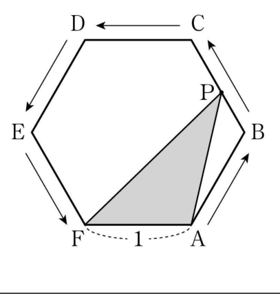

원본 (내부용)점 \((2,3)\)을 지나고 직선 \(3x+2y-5=0\)과 평행한 직선의 \(y\)절편은? [3점]
① 6② 7③ 8④ 9⑤ 10
원본 정답 ①
원본 풀이 (내부용)[출제의도] 두 직선의 평행 조건을 이해하여 직선의 \(y\)절편을 구한다.
직선 \(3x+2y-5=0\), 즉 \(y=-\frac32x+\frac52\)의 기울기가 \(-\frac32\)이므로 이 직선과 평행한 직선의 기울기는 \(-\frac32\)이다. 기울기가 \(-\frac32\)이고 점 \((2,3)\)을 지나는 직선의 방정식은
\(
y=-\frac32(x-2)+3,\quad\text{즉}\quad y=-\frac32x+6
\)
이므로, 구하는 \(y\)절편은 6이다.
**[다른 풀이]**
직선 \(3x+2y-5=0\)과 평행한 직선의 방정식은 \(3x+2y=a\) \((a\text{는 상수})\) 꼴로 쓸 수 있다. 이 직선이 점 \((2,3)\)을 지나므로
\(
3\times2+2\times3=a,\quad a=12
\)
따라서 직선 \(3x+2y-12=0\)의 \(y\)절편은 6이다.
생성기 숫자판 1/6 · G2H-05#2점 $\left(-2,\ 4\right)$를 지나고 직선 $3x+2y+1=0$과 평행한 직선의 $y$절편으로 옳은 것을 고르세요.
① $-2$② $-1$③ $0$④ $1$⑤ $2$
정답④ $1$ 직선 $3x+2y+1=0$의 기울기는 $-\frac{3}{2}$ 구하는 직선은 $y-4=-\frac{3}{2}\left(x-\left(-2\right)\right)$ $x=0$을 대입하면 $y=1$이므로 $y$절편은 $1$
생성기 숫자판 1/5 · G2H-02b#0복소수 $\frac{a+3i}{3-i}$의 실수부분과 허수부분의 합이 $3$일 때, 실수 $a$의 값으로 옳은 것을 고르세요. (단, $i=\sqrt{-1}$)
① $3$② $4$③ $5$④ $6$⑤ $7$
정답④ $6$ $\frac{a+3i}{3-i}=\frac{\left(a+3i\right)\left(3+i\right)}{\left(3-i\right)\left(3+i\right)}=\frac{\left(3a-3\right)+\left(a+9\right)i}{10}$ 실수부분과 허수부분의 합은 $\frac{4a+6}{10}=3$ 따라서 $a=6$
숫자: 원본 3 2 3 → 쌍둥이 3 3 3 · 같은 수: 3
생성기 숫자판 2/5 · G2H-02b#0복소수 $\frac{a+3i}{3-i}$의 실수부분과 허수부분의 합이 $1$일 때, 실수 $a$의 값으로 옳은 것을 고르세요. (단, $i=\sqrt{-1}$)
① $1$② $2$③ $3$④ $4$⑤ $5$
정답① $1$ $\frac{a+3i}{3-i}=\frac{\left(a+3i\right)\left(3+i\right)}{\left(3-i\right)\left(3+i\right)}=\frac{\left(3a-3\right)+\left(a+9\right)i}{10}$ 실수부분과 허수부분의 합은 $\frac{4a+6}{10}=1$ 따라서 $a=1$
숫자: 원본 3 2 3 → 쌍둥이 3 3 1 · 같은 수: 3
생성기 숫자판 3/5 · G2H-02b#0복소수 $\frac{a+2i}{2-i}$의 실수부분과 허수부분의 합이 $4$일 때, 실수 $a$의 값으로 옳은 것을 고르세요. (단, $i=\sqrt{-1}$)
① $6$② $7$③ $8$④ $9$⑤ $10$
정답① $6$ $\frac{a+2i}{2-i}=\frac{\left(a+2i\right)\left(2+i\right)}{\left(2-i\right)\left(2+i\right)}=\frac{\left(2a-2\right)+\left(a+4\right)i}{5}$ 실수부분과 허수부분의 합은 $\frac{3a+2}{5}=4$ 따라서 $a=6$
숫자: 원본 3 2 3 → 쌍둥이 2 2 4 · 같은 수: 2
생성기 숫자판 4/5 · G2H-02b#0복소수 $\frac{a+2i}{3-i}$의 실수부분과 허수부분의 합이 $2$일 때, 실수 $a$의 값으로 옳은 것을 고르세요. (단, $i=\sqrt{-1}$)
① $3$② $4$③ $5$④ $6$⑤ $7$
정답② $4$ $\frac{a+2i}{3-i}=\frac{\left(a+2i\right)\left(3+i\right)}{\left(3-i\right)\left(3+i\right)}=\frac{\left(3a-2\right)+\left(a+6\right)i}{10}$ 실수부분과 허수부분의 합은 $\frac{4a+4}{10}=2$ 따라서 $a=4$
숫자: 원본 3 2 3 → 쌍둥이 2 3 2 · 같은 수: 2 3
생성기 숫자판 5/5 · G2H-02b#0복소수 $\frac{a+4i}{3-i}$의 실수부분과 허수부분의 합이 $2$일 때, 실수 $a$의 값으로 옳은 것을 고르세요. (단, $i=\sqrt{-1}$)
① $-1$② $0$③ $1$④ $2$⑤ $3$
정답⑤ $3$ $\frac{a+4i}{3-i}=\frac{\left(a+4i\right)\left(3+i\right)}{\left(3-i\right)\left(3+i\right)}=\frac{\left(3a-4\right)+\left(a+12\right)i}{10}$ 실수부분과 허수부분의 합은 $\frac{4a+8}{10}=2$ 따라서 $a=3$
숫자: 원본 3 2 3 → 쌍둥이 4 3 2 · 같은 수: 2 3
7. 2022년 3월 7번 · 3점 · 고1 범위 · 순열과 조합 · G2M10-02#0
원본 (내부용)숫자 1, 2, 3, 4, 5가 하나씩 적혀 있는 5장의 카드가 있다. 이 5장의 카드를 모두 일렬로 나열할 때, 짝수가 적혀 있는 카드끼리 서로 이웃하지 않도록 나열하는 경우의 수는? [3점]
① 24② 36③ 48④ 60⑤ 72
원본 정답 ⑤
원본 풀이 (내부용)[출제의도] 순열을 이해하여 일렬로 나열하는 경우의 수를 구한다.
먼저 1, 3, 5가 적혀 있는 카드를 나열하는 경우의 수는 \(3!=6\)이다.
이 각각에 대하여 1, 3, 5가 적혀 있는 세 장의 카드의 사이사이와 양끝의 네 곳 중에서 두 곳을 선택하여 2, 4가 적혀 있는 카드를 하나씩 나열하는 경우의 수는
\(
{}_4P_2=4\times3=12
\)
따라서 구하는 경우의 수는
\(
6\times12=72
\)
**[다른 풀이]**
5장의 카드를 모두 일렬로 나열하는 경우의 수는 \(5!=120\).
2, 4가 적혀 있는 두 장의 카드를 한 묶음으로 생각하여 이 묶음과 1, 3, 5가 적혀 있는 카드를 일렬로 나열하는 경우의 수는 \(4!\)이고, 각각에 대하여 2, 4가 적혀 있는 카드를 나열하는 경우의 수는 \(2!\)이므로 짝수가 적혀 있는 카드끼리 서로 이웃하도록 나열하는 경우의 수는
\(
4!\times2!=48
\)
따라서 짝수가 적혀 있는 카드끼리 서로 이웃하지 않도록 나열하는 경우의 수는
\(
120-48=72
\)
생성기 숫자판 1/5 · G2M10-02#0숫자 $1$, $2$, $3$, $4$가 하나씩 적혀 있는 $4$장의 카드가 있습니다. 이 $4$장의 카드를 모두 일렬로 나열할 때, 짝수가 적혀 있는 카드끼리 서로 이웃하지 않도록 나열하는 경우의 수로 옳은 것을 고르세요.
① $12$② $24$③ $36$④ $48$⑤ $60$
정답① $12$ 홀수가 적힌 카드 $2$장을 일렬로 나열하는 경우의 수는 $2!=2$ 홀수 카드 사이사이와 양 끝의 $3$개의 자리 중 $2$개를 골라 짝수 카드 $2$장을 나열하는 경우의 수는 ${}_{3}\mathrm{P}_{2}=6$ 따라서 구하는 경우의 수는 $2\times 6=12$
생성기 숫자판 2/5 · G2M10-02#0숫자 $1$, $2$, $4$, $5$, $7$, $8$이 하나씩 적혀 있는 $6$장의 카드가 있습니다. 이 $6$장의 카드를 모두 일렬로 나열할 때, 짝수가 적혀 있는 카드끼리 서로 이웃하지 않도록 나열하는 경우의 수로 옳은 것을 고르세요.
① $120$② $132$③ $144$④ $156$⑤ $168$
정답③ $144$ 홀수 카드 $3$장을 나열하는 경우의 수는 $3!=6$ 홀수 카드 사이와 양 끝의 $4$자리 중 $3$자리에 짝수 카드 $3$장을 나열하는 경우의 수는 ${}_{4}P_{3}=24$ 따라서 $6\times24=144$
생성기 숫자판 3/5 · G2M10-02#0숫자 $2$, $3$, $4$, $5$, $6$, $7$이 하나씩 적혀 있는 $6$장의 카드가 있습니다. 이 $6$장의 카드를 모두 일렬로 나열할 때, 짝수가 적혀 있는 카드끼리 서로 이웃하지 않도록 나열하는 경우의 수로 옳은 것을 고르세요.
① $96$② $108$③ $120$④ $132$⑤ $144$
정답⑤ $144$ 홀수가 적힌 카드 $3$장을 일렬로 나열하는 경우의 수는 $3!=6$ 홀수 카드 사이사이와 양 끝의 $4$개의 자리 중 $3$개를 골라 짝수 카드 $3$장을 나열하는 경우의 수는 ${}_{4}\mathrm{P}_{3}=24$ 따라서 구하는 경우의 수는 $6\times 24=144$
생성기 숫자판 4/5 · G2M10-02#0숫자 $3$, $4$, $5$, $6$, $7$이 하나씩 적혀 있는 $5$장의 카드가 있습니다. 이 $5$장의 카드를 모두 일렬로 나열할 때, 짝수가 적혀 있는 카드끼리 서로 이웃하지 않도록 나열하는 경우의 수로 옳은 것을 고르세요.
① $48$② $60$③ $72$④ $84$⑤ $96$
정답③ $72$ 홀수가 적힌 카드 $3$장을 일렬로 나열하는 경우의 수는 $3!=6$ 홀수 카드 사이사이와 양 끝의 $4$개의 자리 중 $2$개를 골라 짝수 카드 $2$장을 나열하는 경우의 수는 ${}_{4}\mathrm{P}_{2}=12$ 따라서 구하는 경우의 수는 $6\times 12=72$
생성기 숫자판 5/5 · G2M10-02#0숫자 $3$, $4$, $5$, $6$, $7$, $8$이 하나씩 적혀 있는 $6$장의 카드가 있습니다. 이 $6$장의 카드를 모두 일렬로 나열할 때, 짝수가 적혀 있는 카드끼리 서로 이웃하지 않도록 나열하는 경우의 수로 옳은 것을 고르세요.
① $144$② $156$③ $168$④ $180$⑤ $192$
정답① $144$ 홀수가 적힌 카드 $3$장을 일렬로 나열하는 경우의 수는 $3!=6$ 홀수 카드 사이사이와 양 끝의 $4$개의 자리 중 $3$개를 골라 짝수 카드 $3$장을 나열하는 경우의 수는 ${}_{4}\mathrm{P}_{3}=24$ 따라서 구하는 경우의 수는 $6\times 24=144$
원본 (내부용)두 점 \(A(a,0),\ B(2,-4)\)에 대하여 선분 \(AB\)를 \(3:1\)로 내분하는 점이 \(y\)축 위에 있을 때, 선분 \(AB\)의 길이는? [3점]
① \(2\sqrt5\)② \(3\sqrt5\)③ \(4\sqrt5\)④ \(5\sqrt5\)⑤ \(6\sqrt5\)
원본 정답 ③
원본 풀이 (내부용)[출제의도] 선분의 내분을 이해하여 선분의 길이를 구한다.
두 점 \(A(a,0)\), \(B(2,-4)\)에 대하여 선분 \(AB\)를 \(3:1\)로 내분하는 점의 좌표는
\(
\left(\frac{3\times2+1\times a}{3+1},\frac{3\times(-4)+1\times0}{3+1}\right)
=\left(\frac{6+a}{4},-3\right)
\)
이 점이 \(y\)축 위에 있으므로 \(\frac{6+a}{4}=0\)에서 \(a=-6\).
따라서 점 \(A\)의 좌표는 \((-6,0)\)이므로
\(
\overline{AB}
=\sqrt{(2-(-6))^2+(-4-0)^2}
=\sqrt{80}=4\sqrt5
\)
생성기 숫자판 1/6 · G2H-05b#5두 점 $\mathrm{A}\left(a,\ 0\right)$, $\mathrm{B}\left(10,\ 112\right)$에 대하여 선분 $\mathrm{AB}$를 $5:10$으로 내분하는 점이 $y$축 위에 있을 때, 선분 $\mathrm{AB}$의 길이로 옳은 것을 고르세요.
생성기 숫자판 2/6 · G2H-05b#5두 점 $\mathrm{A}\left(a,\ 0\right)$, $\mathrm{B}\left(6,\ 60\right)$에 대하여 선분 $\mathrm{AB}$를 $5:6$으로 내분하는 점이 $y$축 위에 있을 때, 선분 $\mathrm{AB}$의 길이로 옳은 것을 고르세요.
생성기 숫자판 3/6 · G2H-05b#5두 점 $\mathrm{A}\left(a,\ 0\right)$, $\mathrm{B}\left(59,\ 120\right)$에 대하여 선분 $\mathrm{AB}$를 $5:59$로 내분하는 점이 $y$축 위에 있을 때, 선분 $\mathrm{AB}$의 길이로 옳은 것을 고르세요.
생성기 숫자판 4/6 · G2H-05b#5두 점 $\mathrm{A}\left(a,\ 0\right)$, $\mathrm{B}\left(19,\ 70\right)$에 대하여 선분 $\mathrm{AB}$를 $5:19$로 내분하는 점이 $y$축 위에 있을 때, 선분 $\mathrm{AB}$의 길이로 옳은 것을 고르세요.
생성기 숫자판 5/6 · G2H-05b#5두 점 $\mathrm{A}\left(a,\ 0\right)$, $\mathrm{B}\left(52,\ 176\right)$에 대하여 선분 $\mathrm{AB}$를 $5:52$로 내분하는 점이 $y$축 위에 있을 때, 선분 $\mathrm{AB}$의 길이로 옳은 것을 고르세요.
생성기 숫자판 6/6 · G2H-05b#5두 점 $\mathrm{A}\left(a,\ 0\right)$, $\mathrm{B}\left(1,\ 3\right)$에 대하여 선분 $\mathrm{AB}$를 $3:1$로 내분하는 점이 $y$축 위에 있을 때, 선분 $\mathrm{AB}$의 길이로 옳은 것을 고르세요.
원본 (내부용)\(x+y=\sqrt2,\ xy=-2\)일 때, \( \frac{x^2}{y}+\frac{y^2}{x} \) 의 값은? [3점]
① \(-5\sqrt2\)② \(-4\sqrt2\)③ \(-3\sqrt2\)④ \(-2\sqrt2\)⑤ \(-\sqrt2\)
원본 정답 ②
원본 풀이 (내부용)[출제의도] 곱셈 공식 3을 이해하여 식의 값을 구한다.
\(
x^3+y^3=(x+y)^3-3xy(x+y)
\)
이므로
\(
\begin{aligned}
\frac{x^2}{y}+\frac{y^2}{x}
&=\frac{x^3+y^3}{xy}\\
&=\frac{(x+y)^3-3xy(x+y)}{xy}\\
&=\frac{(\sqrt2)^3-3\times(-2)\times\sqrt2}{-2}\\
&=\frac{2\sqrt2+6\sqrt2}{-2}\\
&=-4\sqrt2
\end{aligned}
\)
생성기 숫자판 1/5 · G2M8-06#0$x+y=\sqrt{2},\ xy=-2$일 때, $\frac{x^{2}}{y}+\frac{y^{2}}{x}$의 값으로 옳은 것을 고르세요.
① $-5\sqrt{2}$② $-4\sqrt{2}$③ $-3\sqrt{2}$④ $-2\sqrt{2}$⑤ $-\sqrt{2}$
정답② $-4\sqrt{2}$ $\frac{x^{2}}{y}+\frac{y^{2}}{x}=\frac{x^{3}+y^{3}}{xy}$ $x^{3}+y^{3}=\left(x+y\right)^{3}-3xy\left(x+y\right)=\left(\sqrt{2}\right)^{3}-3\times \left(-2\right)\times \sqrt{2}=8\sqrt{2}$ 따라서 구하는 값은 $\frac{8\sqrt{2}}{-2}=-4\sqrt{2}$
숫자: 원본 2 2 → 쌍둥이 2 2 · 같은 수: 2
생성기 숫자판 2/5 · G2M8-06#0$x+y=2\sqrt{3},\ xy=-4$일 때, $\frac{x^{2}}{y}+\frac{y^{2}}{x}$의 값으로 옳은 것을 고르세요.
① $-14\sqrt{3}$② $-13\sqrt{3}$③ $-12\sqrt{3}$④ $-11\sqrt{3}$⑤ $-10\sqrt{3}$
정답③ $-12\sqrt{3}$ $\frac{x^{2}}{y}+\frac{y^{2}}{x}=\frac{x^{3}+y^{3}}{xy}$ $x^{3}+y^{3}=\left(x+y\right)^{3}-3xy\left(x+y\right)=\left(2\sqrt{3}\right)^{3}-3\times \left(-4\right)\times 2\sqrt{3}=48\sqrt{3}$ 따라서 구하는 값은 $\frac{48\sqrt{3}}{-4}=-12\sqrt{3}$
숫자: 원본 2 2 → 쌍둥이 2 3 4 · 같은 수: 2
생성기 숫자판 3/5 · G2M8-06#0$x+y=2\sqrt{2},\ xy=2$일 때, $\frac{x^{2}}{y}+\frac{y^{2}}{x}$의 값으로 옳은 것을 고르세요.
① $\sqrt{2}$② $2\sqrt{2}$③ $3\sqrt{2}$④ $4\sqrt{2}$⑤ $5\sqrt{2}$
정답② $2\sqrt{2}$ $\frac{x^{2}}{y}+\frac{y^{2}}{x}=\frac{x^{3}+y^{3}}{xy}$ $x^{3}+y^{3}=\left(x+y\right)^{3}-3xy\left(x+y\right)=\left(2\sqrt{2}\right)^{3}-3\times 2\times 2\sqrt{2}=4\sqrt{2}$ 따라서 구하는 값은 $\frac{4\sqrt{2}}{2}=2\sqrt{2}$
숫자: 원본 2 2 → 쌍둥이 2 2 2 · 같은 수: 2
생성기 숫자판 4/5 · G2M8-06#0$x+y=\sqrt{3},\ xy=-3$일 때, $\frac{x^{2}}{y}+\frac{y^{2}}{x}$의 값으로 옳은 것을 고르세요.
① $-6\sqrt{3}$② $-5\sqrt{3}$③ $-4\sqrt{3}$④ $-3\sqrt{3}$⑤ $-2\sqrt{3}$
정답③ $-4\sqrt{3}$ $\frac{x^{2}}{y}+\frac{y^{2}}{x}=\frac{x^{3}+y^{3}}{xy}$ $x^{3}+y^{3}=\left(x+y\right)^{3}-3xy\left(x+y\right)=\left(\sqrt{3}\right)^{3}-3\times \left(-3\right)\times \sqrt{3}=12\sqrt{3}$ 따라서 구하는 값은 $\frac{12\sqrt{3}}{-3}=-4\sqrt{3}$
숫자: 원본 2 2 → 쌍둥이 3 3
생성기 숫자판 5/5 · G2M8-06#0$x+y=2\sqrt{3},\ xy=2$일 때, $\frac{x^{2}}{y}+\frac{y^{2}}{x}$의 값으로 옳은 것을 고르세요.
① $2\sqrt{3}$② $3\sqrt{3}$③ $4\sqrt{3}$④ $5\sqrt{3}$⑤ $6\sqrt{3}$
정답⑤ $6\sqrt{3}$ $\frac{x^{2}}{y}+\frac{y^{2}}{x}=\frac{x^{3}+y^{3}}{xy}$ $x^{3}+y^{3}=\left(x+y\right)^{3}-3xy\left(x+y\right)=\left(2\sqrt{3}\right)^{3}-3\times 2\times 2\sqrt{3}=12\sqrt{3}$ 따라서 구하는 값은 $\frac{12\sqrt{3}}{2}=6\sqrt{3}$
숫자: 원본 2 2 → 쌍둥이 2 3 2 · 같은 수: 2
10. 2022년 3월 10번 · 3점 · 고1 범위 · 이차방정식과 이차함수 · G2H-02b#7
원본 (내부용)점 \((-1,0)\)을 지나고 기울기가 \(m\)인 직선이 곡선 \(y=x^2+x+4\)에 접할 때, 양수 \(m\)의 값은? [3점]
① \(\dfrac32\)② \(2\)③ \(\dfrac52\)④ \(3\)⑤ \(\dfrac72\)
원본 정답 ④
원본 풀이 (내부용)[출제의도] 이차함수의 그래프와 직선의 위치 관계를 이해하여 직선의 기울기를 구한다.
점 \((-1,0)\)을 지나고 기울기가 \(m\)인 직선의 방정식은
\(
y=m\{x-(-1)\},\quad\text{즉}\quad y=mx+m
\)
\(y=mx+m\)을 \(y=x^2+x+4\)에 대입하면
\(
mx+m=x^2+x+4
\)
\(
x^2+(1-m)x+4-m=0
\)
직선 \(y=mx+m\)이 곡선 \(y=x^2+x+4\)에 접하므로 이차방정식 \(x^2+(1-m)x+4-m=0\)의 판별식을 \(D\)라 할 때 \(D=0\)이다.
\(
\begin{aligned}
D&=(1-m)^2-4(4-m)\\
&=m^2+2m-15\\
&=(m+5)(m-3)=0
\end{aligned}
\)
에서 \(m=-5\) 또는 \(m=3\). \(m>0\)이므로 \(m=3\).
생성기 숫자판 1/6 · G2H-02b#7점 $\left(-1,\ 0\right)$을 지나고 기울기가 $m$인 직선이 곡선 $y=x^{2}+x+4$에 접할 때, 양수 $m$의 값으로 옳은 것을 고르세요.
① $\frac{3}{2}$② $2$③ $\frac{5}{2}$④ $3$⑤ $\frac{7}{2}$
원본 풀이 (내부용)[출제의도] 무리함수를 이해하여 함수의 치역을 구한다.
함수 \(y=-\sqrt{x-a}+a+2\)의 그래프가 점 \((a,-a)\)를 지나므로
\(
-a=-\sqrt{a-a}+a+2
\)
\(
2a=-2,\quad a=-1
\)
함수 \(y=-\sqrt{x}\)의 치역은 \(\{y\mid y\leq0\}\)이고 함수 \(y=-\sqrt{x+1}+1\)의 그래프는 함수 \(y=-\sqrt{x}\)의 그래프를 \(x\)축의 방향으로 \(-1\)만큼, \(y\)축의 방향으로 1만큼 평행이동한 것이므로 함수 \(y=-\sqrt{x+1}+1\)의 치역은 \(\{y\mid y\leq1\}\)이다.
**[참고]** 그래프에는 \(y=-\sqrt{x+1}+1\)이 그려져 있다. 점 \((-1,1)\)에서 시작하여 원점 \((0,0)\)을 지나 오른쪽 아래로 감소하며, \(x\)축과 \(y\)축이 표시되어 있다.
생성기 숫자판 1/6 · G2H-04b#8함수 $y=\sqrt{x-a}+a+8$의 그래프가 점 $\left(a,\ -a\right)$를 지날 때, 이 함수의 치역으로 옳은 것을 고르세요. (단, $a$는 상수입니다.)
정답④ $\left\{y\mid y\le -2\right\}$ $x=a$일 때 $y=a-4$이므로 $a-4=-a$, $a=2$ 함수는 $y=-\sqrt{x-2}-2$이므로 치역은 $\left\{y\mid y\le -2\right\}$
숫자: 원본 2 → 쌍둥이 4
12. 2022년 3월 12번 · 3점 · 고1 범위 · 복소수와 이차방정식 · G2H-02b#1
원본 (내부용)두 실수 \(a,\ b\)에 대하여 이차방정식 \( x^2+ax+b=0 \) 의 한 근이 \(\dfrac b2+i\)일 때, \(ab\)의 값은? (단, \(i=\sqrt{-1}\)) [3점]
① \(-16\)② \(-8\)③ \(-4\)④ \(-2\)⑤ \(-1\)
원본 정답 ③
원본 풀이 (내부용)[출제의도] 근과 계수의 관계를 이해하여 이차방정식의 계수를 구한다.
이차방정식 \(x^2+ax+b=0\)에서 \(a,b\)가 실수이고, 한 근이 \(\frac b2+i\)로 허수이므로 다른 근은 \(\frac b2-i\)이다.
이차방정식의 근과 계수의 관계에서 이차방정식 \(x^2+ax+b=0\)의 두 근의 합은 \(-a\)이고 두 근의 곱은 \(b\)이다.
\(
\left(\frac b2+i\right)+\left(\frac b2-i\right)=-a
\)
에서
\(
b=-a\qquad\cdots\text{㉠}
\)
\(
\left(\frac b2+i\right)\left(\frac b2-i\right)=b
\)
에서
\(
\frac{b^2}{4}+1=b,\quad b^2-4b+4=(b-2)^2=0
\)
\(
b=2
\)
㉠에서 \(a=-2\). 따라서 \(ab=(-2)\times2=-4\).
생성기 숫자판 1/6 · G2H-02b#1두 실수 $a$, $b$에 대하여 이차방정식 $x^{2}+ax+b=0$의 한 근이 $\frac{b}{16}+8i$일 때, $b-a$의 값으로 옳은 것을 고르세요. (단, $i=\sqrt{-1}$)
① $142$② $143$③ $144$④ $145$⑤ $146$
정답③ $144$ 실계수 이차방정식의 한 근이 $\frac{b}{16}+8i$이면 그 켤레복소수도 근입니다. 두 근의 합은 $\frac{2b}{16}=-a$, 즉 $a=-16$입니다. 두 근의 곱은 $\frac{b^2}{256}+64=b$, 정리하면 $\left(b-128\right)^2=0$에서 $b=128$입니다. $b-a=128-(-16)=144$입니다.
숫자: 원본 0 2 → 쌍둥이 0 16 8 · 같은 수: 0
생성기 숫자판 2/6 · G2H-02b#1두 실수 $a$, $b$에 대하여 이차방정식 $x^{2}+ax+b=0$의 한 근이 $\frac{b}{12}+6i$일 때, $b-a$의 값으로 옳은 것을 고르세요. (단, $i=\sqrt{-1}$)
① $82$② $83$③ $84$④ $85$⑤ $86$
정답③ $84$ 실계수 이차방정식의 한 근이 $\frac{b}{12}+6i$이면 그 켤레복소수도 근입니다. 두 근의 합은 $\frac{2b}{12}=-a$, 즉 $a=-12$입니다. 두 근의 곱은 $\frac{b^2}{144}+36=b$, 정리하면 $\left(b-72\right)^2=0$에서 $b=72$입니다. $b-a=72-(-12)=84$입니다.
숫자: 원본 0 2 → 쌍둥이 0 12 6 · 같은 수: 0
생성기 숫자판 3/6 · G2H-02b#1두 실수 $a$, $b$에 대하여 이차방정식 $x^{2}+ax+b=0$의 한 근이 $\frac{b}{38}+19i$일 때, $b-a$의 값으로 옳은 것을 고르세요. (단, $i=\sqrt{-1}$)
① $758$② $759$③ $760$④ $761$⑤ $762$
정답③ $760$ 실계수 이차방정식의 한 근이 $\frac{b}{38}+19i$이면 그 켤레복소수도 근입니다. 두 근의 합은 $\frac{2b}{38}=-a$, 즉 $a=-38$입니다. 두 근의 곱은 $\frac{b^2}{1444}+361=b$, 정리하면 $\left(b-722\right)^2=0$에서 $b=722$입니다. $b-a=722-(-38)=760$입니다.
숫자: 원본 0 2 → 쌍둥이 0 38 19 · 같은 수: 0
생성기 숫자판 4/6 · G2H-02b#1두 실수 $a$, $b$에 대하여 이차방정식 $x^{2}+ax+b=0$의 한 근이 $\frac{b}{36}+18i$일 때, $b-a$의 값으로 옳은 것을 고르세요. (단, $i=\sqrt{-1}$)
① $682$② $683$③ $684$④ $685$⑤ $686$
정답③ $684$ 실계수 이차방정식의 한 근이 $\frac{b}{36}+18i$이면 그 켤레복소수도 근입니다. 두 근의 합은 $\frac{2b}{36}=-a$, 즉 $a=-36$입니다. 두 근의 곱은 $\frac{b^2}{1296}+324=b$, 정리하면 $\left(b-648\right)^2=0$에서 $b=648$입니다. $b-a=648-(-36)=684$입니다.
숫자: 원본 0 2 → 쌍둥이 0 36 18 · 같은 수: 0
생성기 숫자판 5/6 · G2H-02b#1두 실수 $a$, $b$에 대하여 이차방정식 $x^{2}+ax+b=0$의 한 근이 $\frac{b}{4}+2i$일 때, $b-a$의 값으로 옳은 것을 고르세요. (단, $i=\sqrt{-1}$)
원본 (내부용)전체집합 \( U=\{x\mid x는\ 50\ 이하의\ 자연수\} \) 의 두 부분집합 \( A=\{x\mid x는\ 6의\ 배수\},\qquad B=\{x\mid x는\ 4의\ 배수\} \) 가 있다. \(A\cup X=A\)이고 \(B\cap X=\varnothing\)인 집합 \(X\)의 개수는? [3점]
① 8② 16③ 32④ 64⑤ 128
원본 정답 ②
원본 풀이 (내부용)[출제의도] 집합의 연산을 이해하여 부분집합의 개수를 구한다.
\(A\cup X=A\)에서 \(X\subset A\)이고 \(B\cap X=\varnothing\)이므로 집합 \(X\)는 집합 \(A-B\)의 부분집합이다.
집합 \(A-B\)는 50 이하의 6의 배수 중 4의 배수가 아닌 수의 집합이므로
\(
A-B=\{6,18,30,42\}
\)
따라서 집합 \(X\)의 개수는 집합 \(A-B\)의 부분집합의 개수인
\(
2^4=16
\)
이다.
생성기 숫자판 1/6 · G2H-03b#15전체집합 $U=\{x\mid x\text{는 }60\text{ 이하의 자연수}\}$의 두 부분집합 $A=\{x\mid x\text{는 }5\text{의 배수}\}$, $B=\{x\mid x\text{는 }4\text{의 배수}\}$에 대하여 $A\cup X=A$이고 $B\cap X=\varnothing$인 집합 $X$의 개수로 옳은 것을 고르세요.
원본 (내부용)집합 \(X=\{1,2,3,4,5\}\)에 대하여 \(X\)에서 \(X\)로의 함수 \(f\)의 역함수가 존재하고 \( f(1)+2f(3)=12,\qquad f^{-1}(1)-f^{-1}(3)=2 \) 일 때, \(f(4)+f^{-1}(4)\)의 값은? [4점]
① 5② 6③ 7④ 8⑤ 9
원본 정답 ②
원본 풀이 (내부용)[출제의도] 역함수의 성질을 이용하여 조건을 만족시키는 함수를 추론한다.
함수 \(f\)의 역함수가 존재하므로 함수 \(f\)는 일대일대응이다.
\(f(1)+2f(3)=12\)이고 \(f\)는 일대일대응이므로 \(f(1)=2,\ f(3)=5\) …… ㉠
\(
f^{-1}(1)-f^{-1}(3)=2
\)
에서 \(f^{-1}(1)\in X,\ f^{-1}(3)\in X\)이므로
\(
f^{-1}(1)=3,\quad f^{-1}(3)=1
\)
또는
\(
f^{-1}(1)=4,\quad f^{-1}(3)=2
\)
또는
\(
f^{-1}(1)=5,\quad f^{-1}(3)=3
\)
이다.
㉠에서 \(f^{-1}(2)=1,\ f^{-1}(5)=3\)이고 함수 \(f^{-1}\)도 일대일대응이므로 \(f^{-1}(1)=4,\ f^{-1}(3)=2\)이다. 즉, \(f(1)=2,\ f(2)=3,\ f(3)=5,\ f(4)=1\)이고 함수 \(f\)는 일대일대응이므로 \(f(5)=4\)이다.
즉, \(f^{-1}(4)=5\).
따라서 \(f(4)+f^{-1}(4)=1+5=6\).
---
## 답안 및 해설
쌍둥이 1/5 · 4점 쌍둥이집합 $X=\{1,2,3,4,5\}$에서 $X$로의 전단사 함수 $f$가 $f(1)+3f(3)=5$, $f^{-1}(4)-f^{-1}(3)=3$을 만족시킵니다. $f(4)+f^{-1}(4)$의 값을 구하세요.
① $8$② $9$③ $10$④ $11$⑤ $12$
정답③ $10$ $f(1)+3f(3)=5$와 서로 다른 함숫값 조건에서 $(f(1),f(3))=(2, 1)$. 역함수 조건은 값 4을 갖는 위치와 값 3를 갖는 위치의 차를 정합니다. 나머지 값의 순열을 대입하면 유일하게 $(f(1),f(2),f(3),f(4),f(5))=(2, 3, 1, 5, 4)$입니다. 따라서 $f(4)=5$, $f^{-1}(4)=5$이므로 $f(4)+f^{-1}(4)=10$입니다.
쌍둥이 2/5 · 4점 쌍둥이집합 $X=\{1,2,3,4,5\}$에서 $X$로의 전단사 함수 $f$가 $f(1)+3f(3)=5$, $f^{-1}(3)-f^{-1}(4)=1$을 만족시킵니다. $f(4)+f^{-1}(4)$의 값을 구하세요.
① $6$② $7$③ $8$④ $9$⑤ $10$
정답③ $8$ $f(1)+3f(3)=5$와 서로 다른 함숫값 조건에서 $(f(1),f(3))=(2, 1)$. 역함수 조건은 값 3을 갖는 위치와 값 4를 갖는 위치의 차를 정합니다. 나머지 값의 순열을 대입하면 유일하게 $(f(1),f(2),f(3),f(4),f(5))=(2, 5, 1, 4, 3)$입니다. 따라서 $f(4)=4$, $f^{-1}(4)=4$이므로 $f(4)+f^{-1}(4)=8$입니다.
쌍둥이 3/5 · 4점 쌍둥이집합 $X=\{1,2,3,4,5\}$에서 $X$로의 전단사 함수 $f$가 $f(1)+3f(3)=5$, $f^{-1}(3)-f^{-1}(4)=2$를 만족시킵니다. $f(4)+f^{-1}(4)$의 값을 구하세요.
① $3$② $4$③ $5$④ $6$⑤ $7$
정답③ $5$ $f(1)+3f(3)=5$와 서로 다른 함숫값 조건에서 $(f(1),f(3))=(2, 1)$. 역함수 조건은 값 3을 갖는 위치와 값 4를 갖는 위치의 차를 정합니다. 나머지 값의 순열을 대입하면 유일하게 $(f(1),f(2),f(3),f(4),f(5))=(2, 4, 1, 3, 5)$입니다. 따라서 $f(4)=3$, $f^{-1}(4)=2$이므로 $f(4)+f^{-1}(4)=5$입니다.
쌍둥이 4/5 · 4점 쌍둥이집합 $X=\{1,2,3,4,5\}$에서 $X$로의 전단사 함수 $f$가 $f(1)+3f(3)=5$, $f^{-1}(3)-f^{-1}(4)=3$을 만족시킵니다. $f(4)+f^{-1}(4)$의 값을 구하세요.
① $5$② $6$③ $7$④ $8$⑤ $9$
정답③ $7$ $f(1)+3f(3)=5$와 서로 다른 함숫값 조건에서 $(f(1),f(3))=(2, 1)$. 역함수 조건은 값 3을 갖는 위치와 값 4를 갖는 위치의 차를 정합니다. 나머지 값의 순열을 대입하면 유일하게 $(f(1),f(2),f(3),f(4),f(5))=(2, 4, 1, 5, 3)$입니다. 따라서 $f(4)=5$, $f^{-1}(4)=2$이므로 $f(4)+f^{-1}(4)=7$입니다.
쌍둥이 5/5 · 4점 쌍둥이집합 $X=\{1,2,3,4,5\}$에서 $X$로의 전단사 함수 $f$가 $f(1)+3f(3)=6$, $f^{-1}(2)-f^{-1}(4)=2$를 만족시킵니다. $f(4)+f^{-1}(4)$의 값을 구하세요.
① $2$② $3$③ $4$④ $5$⑤ $6$
정답③ $4$ $f(1)+3f(3)=6$과 서로 다른 함숫값 조건에서 $(f(1),f(3))=(3, 1)$. 역함수 조건은 값 2을 갖는 위치와 값 4를 갖는 위치의 차를 정합니다. 나머지 값의 순열을 대입하면 유일하게 $(f(1),f(2),f(3),f(4),f(5))=(3, 4, 1, 2, 5)$입니다. 따라서 $f(4)=2$, $f^{-1}(4)=2$이므로 $f(4)+f^{-1}(4)=4$입니다.
15. 2022년 3월 15번 · 4점 · 고1 범위 · 여러 가지 방정식과 부등식 · 4점 쌍둥이
원본 (내부용)연립부등식 \( \begin{cases} |x-k|\leq 5\\ x^2-x-12>0 \end{cases} \) 을 만족시키는 모든 정수 \(x\)의 값의 합이 7이 되도록 하는 정수 \(k\)의 값은? [4점]
① \(-2\)② \(-1\)③ \(0\)④ \(1\)⑤ \(2\)
원본 정답 ④
원본 풀이 (내부용)[출제의도] 연립부등식을 이해하여 조건을 만족시키는 미지수를 구한다.
\(
|x-k|\leq5\text{에서 }-5\leq x-k\leq5
\)
\(
k-5\leq x\leq k+5\quad\cdots\text{㉠}
\)
\(
x^2-x-12>0\text{에서 }(x+3)(x-4)>0
\)
\(
x<-3\text{ 또는 }x>4\quad\cdots\text{㉡}
\)
**(i) \(k+5\leq4\), 즉 \(k\leq-1\)일 때**
㉠, ㉡을 모두 만족시키는 정수 \(x\)는 모두 \(-3\)보다 작으므로 합은 7보다 작게 되어 조건을 만족시키지 않는다.
**(ii) \(k-5<-3\)이고 \(k+5>4\), 즉 \(-1<k<2\)일 때**
\(k=0\)이면 ㉠, ㉡을 모두 만족시키는 정수 \(x\)는 \(-5,-4,5\)이고 그 합은 \(-4\)가 되어 조건을 만족시키지 않는다.
\(k=1\)이면 ㉠, ㉡을 모두 만족시키는 정수 \(x\)는 \(-4,5,6\)이고 그 합은 7이 되어 조건을 만족시킨다.
**(iii) \(k-5\geq-3\), 즉 \(k\geq2\)일 때**
㉠, ㉡을 모두 만족시키는 정수 \(x\)는 두 개 이상이고 모두 4보다 크므로 그 합은 7보다 크게 되어 조건을 만족시킨다.
(i), (ii), (iii)에서 \(k=1\)이다.
**
쌍둥이 1/5 · 4점 쌍둥이연립부등식 $\begin{cases}|x-1|\le3\\x^2-4x-5>0\end{cases}$을 만족시키는 모든 정수 $x$의 개수를 구하세요.
① $0$② $1$③ $2$④ $3$⑤ $4$
정답② $1$ $|x-1|\le3$에서 $-2\le x\le4$ $x^2-4x-5=(x+1)(x-5)>0$에서 $x<-1$ 또는 $x>5$ 두 조건을 만족하는 정수는 $x=-2$뿐이므로 개수는 $1$
숫자: 원본 5 12 0 7 → 쌍둥이 1 3 4 5 0 · 같은 수: 0 5
쌍둥이 2/5 · 4점 쌍둥이연립부등식 $\begin{cases}\left|x-k\right|\le 4\\x^{2}-x-6>0\end{cases}$을 만족시키는 모든 정수 $x$의 값의 합이 $15$가 되도록 하는 정수 $k$의 값으로 옳은 것을 고르세요.
① $1$② $2$③ $3$④ $4$⑤ $5$
정답② $2$ $\left|x-k\right|\le 4$에서 $k-4\le x\le k+4$, $x^{2}-x-6>0$에서 $x<-2$ 또는 $x>3$ 정수 $k$에 따라 합을 조사하면 $k=2$일 때 범위는 $-2\le x\le 6$이고 조건을 만족시키는 정수는 $4$, $5$, $6$으로 합이 $15$ $k=1$이면 합이 $6$, $k=3$이면 합이 $22$이고 $k$가 이보다 멀어지면 합이 더 크게 달라지므로 $k=2$
숫자: 원본 5 12 0 7 → 쌍둥이 4 6 0 15 · 같은 수: 0
쌍둥이 3/5 · 4점 쌍둥이연립부등식 $\begin{cases}\left|x-k\right|\le 5\\x^{2}+x-6>0\end{cases}$을 만족시키는 모든 정수 $x$의 값의 합이 $-8$이 되도록 하는 정수 $k$의 값으로 옳은 것을 고르세요.
① $-5$② $-4$③ $-3$④ $-2$⑤ $-1$
정답⑤ $-1$ $\left|x-k\right|\le 5$에서 $k-5\le x\le k+5$, $x^{2}+x-6>0$에서 $x<-3$ 또는 $x>2$ 정수 $k$에 따라 합을 조사하면 $k=-1$일 때 범위는 $-6\le x\le 4$이고 조건을 만족시키는 정수는 $-6$, $-5$, $-4$, $3$, $4$로 합이 $-8$ $k=-2$이면 합이 $-19$, $k=0$이면 합이 $3$이고 $k$가 이보다 멀어지면 합이 더 크게 달라지므로 $k=-1$
숫자: 원본 5 12 0 7 → 쌍둥이 5 6 0 8 · 같은 수: 0 5
쌍둥이 4/5 · 4점 쌍둥이연립부등식 $\begin{cases}\left|x-k\right|\le 6\\x^{2}-16>0\end{cases}$을 만족시키는 모든 정수 $x$의 값의 합이 $26$이 되도록 하는 정수 $k$의 값으로 옳은 것을 고르세요.
① $2$② $3$③ $4$④ $5$⑤ $6$
정답① $2$ $\left|x-k\right|\le 6$에서 $k-6\le x\le k+6$, $x^{2}-16>0$에서 $x<-4$ 또는 $x>4$ 정수 $k$에 따라 합을 조사하면 $k=2$일 때 범위는 $-4\le x\le 8$이고 조건을 만족시키는 정수는 $5$, $6$, $7$, $8$로 합이 $26$ $k=1$이면 합이 $13$, $k=3$이면 합이 $35$이고 $k$가 이보다 멀어지면 합이 더 크게 달라지므로 $k=2$
숫자: 원본 5 12 0 7 → 쌍둥이 6 16 0 26 · 같은 수: 0
쌍둥이 5/5 · 4점 쌍둥이연립부등식 $\begin{cases}|x+2|\le5\\x^2-9>0\end{cases}$을 만족시키는 모든 정수 $x$의 값의 합을 구하세요.
16. 2022년 3월 16번 · 4점 · 고1 범위 · 여러 가지 방정식과 부등식 · 4점 쌍둥이
원본 (내부용)삼차방정식 \(x^3-x^2-kx+k=0\)의 세 근을 \(\alpha,\ \beta,\ \gamma\)라 하자. \(\alpha,\ \beta\) 중 실수는 하나뿐이고 \(\alpha^2=-2\beta\)일 때, \(\beta^2+\gamma^2\)의 값은? (단, \(k\)는 0이 아닌 실수이다.) [4점]
① \(-5\)② \(-4\)③ \(-3\)④ \(-2\)⑤ \(-1\)
원본 정답 ⑤
원본 풀이 (내부용)[출제의도] 삼차방정식의 근에 대한 조건을 이용하여 문제를 해결한다.
\(
x^3-x^2-kx+k=0\text{에서}
\)
\(
x^2(x-1)-k(x-1)=0
\)
\(
(x-1)(x^2-k)=0
\)
\(
x=1\text{ 또는 }x^2=k
\)
0이 아닌 실수 \(k\)에 대하여 주어진 방정식의 모든 근이 실수이므로 \(\alpha,\beta\) 중 실수는 하나뿐이라는 조건을 만족시키지 않는다.
\(k<0\)이면 주어진 방정식의 실근은 \(x=1\)뿐이므로, \(\alpha,\beta\) 중에서 실수가 존재하므로 \(\alpha=1\) 또는 \(\beta=1\)이다.
**(i) \(\alpha=1\)일 때**
\(
\alpha^2=-2\text{에서 }\beta=-\frac12\alpha^2=-\frac12
\)
이므로 \(\alpha,\beta\) 중 실수는 하나뿐이라는 조건을 만족시키지 않는다.
**(ii) \(\beta=1\)일 때**
\(
\alpha^2=-2
\)
이때 \(\alpha,\gamma\)는 방정식 \(x^2=k\)의 근이므로
\(
k=\alpha^2=-2,\quad \gamma^2=k=-2
\)
(i), (ii)에서 \(\beta=1,\ \alpha^2=-2\).
따라서
\(
\beta^2+\gamma^2=1^2+(-2)=-1
\)
**[참고 그림]** 집합 \(X\)의 원소 1, 2, 3, 4, 5가 집합 \(X\)의 원소 1, 2, 3, 4, 5로 대응되는 화살표 그림이 있다.
쌍둥이 1/5 · 4점 쌍둥이삼차방정식 $x^{3}-6x^{2}-kx+6k=0$의 세 근을 $\alpha$, $\beta$, $\gamma$라 합니다. $\alpha$, $\beta$ 중 실수는 하나뿐이고 $\alpha^{2}=-8\beta$일 때, $\alpha\beta+\beta\gamma+\gamma\alpha$의 값은? (단, $k$는 $0$이 아닌 실수입니다.)
① $40$② $44$③ $48$④ $52$⑤ $56$
정답③ $48$ 방정식은 $(x-6)(x^{2}-k)=0$으로 인수분해된다. $k>0$이면 세 근이 모두 실수이므로 조건에 맞지 않아 $k<0$이다. 따라서 유일한 실근은 $6$이고, $\alpha$는 $\pm i\sqrt{-k}$, $\beta=6$이다. $\alpha^{2}=k=-8\beta=-48$이므로 $k=-48$이다. 세 근의 두 근씩 곱한 합은 삼차방정식의 계수에 따라 $-k$이므로 $\alpha\beta+\beta\gamma+\gamma\alpha=48$이다.
숫자: 원본 0 2 0 → 쌍둥이 6 6 0 8 0 · 같은 수: 0
쌍둥이 2/5 · 4점 쌍둥이삼차방정식 $x^{3}-2x^{2}-kx+2k=0$의 세 근을 $\alpha$, $\beta$, $\gamma$라 합니다. $\alpha$, $\beta$ 중 실수는 하나뿐이고 $\alpha^{2}=-3\beta$일 때, $\beta^{2}+\gamma^{2}$의 값으로 옳은 것을 고르세요. (단, $k$는 $0$이 아닌 실수입니다.)
① $-2$② $-1$③ $0$④ $1$⑤ $2$
정답① $-2$ $x^{3}-2x^{2}-kx+2k=(x-2)(x^{2}-k)$이므로 세 근은 $2$와 $x^{2}=k$의 두 근입니다. $\alpha$, $\beta$ 중 하나만 실수이므로 $k<0$이고 $x^{2}=k$의 두 근은 허수입니다. $\alpha=2$이면 $\beta=-\frac{4}{3}$가 실수가 되어 모순이므로 $\beta=2$, $\alpha$는 허수 $\alpha^{2}=k=-3\times2=-6$이고 $\gamma$도 $x^{2}=-6$의 근이므로 $\gamma^{2}=-6$ $\beta^{2}+\gamma^{2}=4+(-6)=-2$
숫자: 원본 0 2 0 → 쌍둥이 2 2 0 3 0 · 같은 수: 0 2
쌍둥이 3/5 · 4점 쌍둥이삼차방정식 $x^{3}-3x^{2}-kx+3k=0$의 세 근을 $\alpha$, $\beta$, $\gamma$라 합니다. $\alpha$, $\beta$ 중 실수는 하나뿐이고 $\alpha^{2}=-5\beta$일 때, $\beta^{2}+\gamma^{2}$의 값으로 옳은 것을 고르세요. (단, $k$는 $0$이 아닌 실수입니다.)
① $-7$② $-6$③ $-5$④ $-4$⑤ $-3$
정답② $-6$ $x^{3}-3x^{2}-kx+3k=(x-3)(x^{2}-k)$이므로 세 근은 $3$과 $x^{2}=k$의 두 근입니다. $\alpha$, $\beta$ 중 하나만 실수이므로 $k<0$이고 $x^{2}=k$의 두 근은 허수입니다. $\alpha=3$이면 $\beta=-\frac{9}{5}$가 실수가 되어 모순이므로 $\beta=3$, $\alpha$는 허수 $\alpha^{2}=k=-5\times3=-15$이고 $\gamma$도 $x^{2}=-15$의 근이므로 $\gamma^{2}=-15$ $\beta^{2}+\gamma^{2}=9+(-15)=-6$
숫자: 원본 0 2 0 → 쌍둥이 3 3 0 5 0 · 같은 수: 0
쌍둥이 4/5 · 4점 쌍둥이삼차방정식 $x^{3}-4x^{2}-kx+4k=0$의 세 근을 $\alpha$, $\beta$, $\gamma$라 합니다. $\alpha$, $\beta$ 중 실수는 하나뿐이고 $\alpha^{2}=-5\beta$일 때, $\beta^{2}+\gamma^{2}$의 값으로 옳은 것을 고르세요. (단, $k$는 $0$이 아닌 실수입니다.)
① $-6$② $-5$③ $-4$④ $-3$⑤ $-2$
정답③ $-4$ $x^{3}-4x^{2}-kx+4k=(x-4)(x^{2}-k)$이므로 세 근은 $4$와 $x^{2}=k$의 두 근입니다. $\alpha$, $\beta$ 중 하나만 실수이므로 $k<0$이고 $x^{2}=k$의 두 근은 허수입니다. $\alpha=4$이면 $\beta=-\frac{16}{5}$이 실수가 되어 모순이므로 $\beta=4$, $\alpha$는 허수 $\alpha^{2}=k=-5\times4=-20$이고 $\gamma$도 $x^{2}=-20$의 근이므로 $\gamma^{2}=-20$ $\beta^{2}+\gamma^{2}=16+(-20)=-4$
숫자: 원본 0 2 0 → 쌍둥이 4 4 0 5 0 · 같은 수: 0
쌍둥이 5/5 · 4점 쌍둥이삼차방정식 $x^{3}-5x^{2}-kx+5k=0$의 세 근을 $\alpha$, $\beta$, $\gamma$라 합니다. $\alpha$, $\beta$ 중 실수는 하나뿐이고 $\alpha^{2}=-7\beta$일 때, $\alpha\beta+\beta\gamma+\gamma\alpha$의 값은? (단, $k$는 $0$이 아닌 실수입니다.)
① $28$② $32$③ $35$④ $40$⑤ $42$
정답③ $35$ 방정식은 $(x-5)(x^{2}-k)=0$으로 인수분해된다. $k>0$이면 세 근이 모두 실수이므로 조건에 맞지 않아 $k<0$이다. 따라서 유일한 실근은 $5$이고, $\alpha$는 $\pm i\sqrt{-k}$, $\beta=5$이다. $\alpha^{2}=k=-7\beta=-35$이므로 $k=-35$이다. 세 근의 두 근씩 곱한 합은 삼차방정식의 계수에 따라 $-k$이므로 $\alpha\beta+\beta\gamma+\gamma\alpha=35$이다.
숫자: 원본 0 2 0 → 쌍둥이 5 5 0 7 0 · 같은 수: 0
17. 2022년 3월 17번 · 4점 · 고1 범위 · 여러 가지 방정식과 부등식 · 4점 쌍둥이
원본 (내부용)실수 \(x\)에 대한 두 조건 \( p:\ x^2+2ax+1\geq0,\qquad q:\ x^2+2bx+9\leq0 \) 이 있다. 다음 두 문장이 모두 참인 명제가 되도록 하는 정수 \(a,\ b\)의 순서쌍 \((a,b)\)의 개수는? [4점] - 모든 실수 \(x\)에 대하여 \(p\)이다. - \(p\)는 \(\sim q\)이기 위한 충분조건이다.
① 15② 18③ 21④ 24⑤ 27
원본 정답 ①
원본 풀이 (내부용)[출제의도] 이차부등식을 포함한 문장이 참인 명제가 되도록 하는 문제를 해결한다.
실수 전체의 집합을 \(U\)라 하고, 두 조건 \(p,q\)의 진리집합을 각각 \(P,Q\)라 하자.
‘모든 실수 \(x\)에 대하여 \(p\)이다.’가 참인 명제가 되려면 \(P=U\)이어야 한다.
따라서 모든 실수 \(x\)에 대하여 \(x^2+2ax+1\geq0\)이어야 하므로 이차방정식 \(x^2+2ax+1=0\)의 판별식을 \(D_1\)이라 하면
\(
\frac{D_1}{4}=a^2-1\leq0
\)
\(
(a+1)(a-1)\leq0,\quad -1\leq a\leq1
\)
그러므로 정수 \(a\)는 \(-1,0,1\)이다.
이때 ‘\(p\)는 \(\sim q\)’이기 위한 충분조건이다.’가 참인 명제가 되려면 \(P\subset Q^C\)이어야 하고 \(P=U\)이므로 \(Q^C=U\)이다.
따라서 모든 실수 \(x\)에 대하여 \(x^2+2bx+9>0\)이어야 하므로 이차방정식 \(x^2+2bx+9=0\)의 판별식을 \(D_2\)라 하면
\(
\frac{D_2}{4}=b^2-9<0
\)
\(
(b+3)(b-3)<0,\quad -3<b<3
\)
그러므로 정수 \(b\)는 \(-2,-1,0,1,2\)이다.
따라서 정수 \(a,b\)의 순서쌍 \((a,b)\)의 개수는
\(
3\times5=15
\)
이다.
쌍둥이 1/5 · 4점 쌍둥이실수 $x$에 대한 두 조건 $p:x^2+5ax+25\ge0$, $q:x^2+5bx+64\le0$이 있습니다. 다음 두 문장이 모두 참이 되도록 하는 정수 $a,b$의 순서쌍의 개수를 구하세요. (가) 모든 실수 $x$에 대하여 $p$이다. (나) $p$는 $\sim q$이기 위한 충분조건이다.
① $31$② $33$③ $35$④ $37$⑤ $39$
정답③ $35$ $p$가 모든 실수에서 참이려면 판별식이 $0$ 이하이어야 하므로 $25a^2-4\cdot25\le0$, 즉 $-2\le a\le2$입니다. 가능한 $a$는 5개입니다. $q$가 모든 실수에서 거짓이려면 판별식이 음수여야 하므로 $25b^2-4\cdot64<0$, 즉 $|b|<\frac{2\sqrt{64}}{5}=\frac{16}{5}$입니다. 가능한 정수 $b$는 $-3,-4,\ldots,3$이 아니라 정확히 $-3,\ldots,3$으로 7개입니다. 따라서 순서쌍은 $5\times7=35$개입니다.
숫자: 원본 2 1 0 2 9 0 → 쌍둥이 5 25 0 5 64 0 · 같은 수: 0
쌍둥이 2/5 · 4점 쌍둥이실수 $x$에 대한 두 조건 $p:x^2+3ax+9\ge0$, $q:x^2+3bx+4\le0$이 있습니다. 다음 두 문장이 모두 참이 되도록 하는 정수 $a,b$의 순서쌍의 개수를 구하세요. (가) 모든 실수 $x$에 대하여 $p$이다. (나) $p$는 $\sim q$이기 위한 충분조건이다.
① $11$② $13$③ $15$④ $17$⑤ $19$
정답③ $15$ $p$가 모든 실수에서 참이려면 판별식이 $0$ 이하이어야 하므로 $9a^2-4\cdot9\le0$, 즉 $-2\le a\le2$입니다. 가능한 $a$는 5개입니다. $q$가 모든 실수에서 거짓이려면 판별식이 음수여야 하므로 $9b^2-4\cdot4<0$, 즉 $|b|<\frac{2\sqrt{4}}{3}=\frac{4}{3}$입니다. 가능한 정수 $b$는 $-1,-2,\ldots,1$이 아니라 정확히 $-1,\ldots,1$로 3개입니다. 따라서 순서쌍은 $5\times3=15$개입니다.
숫자: 원본 2 1 0 2 9 0 → 쌍둥이 3 9 0 3 4 0 · 같은 수: 0 9
쌍둥이 3/5 · 4점 쌍둥이실수 $x$에 대한 두 조건 $p:x^2+4ax+16\ge0$, $q:x^2+4bx+25\le0$이 있습니다. 다음 두 문장이 모두 참이 되도록 하는 정수 $a,b$의 순서쌍의 개수를 구하세요. (가) 모든 실수 $x$에 대하여 $p$이다. (나) $p$는 $\sim q$이기 위한 충분조건이다.
① $21$② $23$③ $25$④ $27$⑤ $29$
정답③ $25$ $p$가 모든 실수에서 참이려면 판별식이 $0$ 이하이어야 하므로 $16a^2-4\cdot16\le0$, 즉 $-2\le a\le2$입니다. 가능한 $a$는 5개입니다. $q$가 모든 실수에서 거짓이려면 판별식이 음수여야 하므로 $16b^2-4\cdot25<0$, 즉 $|b|<\frac{2\sqrt{25}}{4}=\frac{5}{2}$입니다. 가능한 정수 $b$는 $-2,-3,\ldots,2$가 아니라 정확히 $-2,\ldots,2$로 5개입니다. 따라서 순서쌍은 $5\times5=25$개입니다.
숫자: 원본 2 1 0 2 9 0 → 쌍둥이 4 16 0 4 25 0 · 같은 수: 0
쌍둥이 4/5 · 4점 쌍둥이실수 $x$에 대한 두 조건 $p:x^2+6ax+36\ge0$, $q:x^2+6bx+196\le0$이 있습니다. 다음 두 문장이 모두 참이 되도록 하는 정수 $a,b$의 순서쌍의 개수를 구하세요. (가) 모든 실수 $x$에 대하여 $p$이다. (나) $p$는 $\sim q$이기 위한 충분조건이다.
① $41$② $43$③ $45$④ $47$⑤ $49$
정답③ $45$ $p$가 모든 실수에서 참이려면 판별식이 $0$ 이하이어야 하므로 $36a^2-4\cdot36\le0$, 즉 $-2\le a\le2$입니다. 가능한 $a$는 5개입니다. $q$가 모든 실수에서 거짓이려면 판별식이 음수여야 하므로 $36b^2-4\cdot196<0$, 즉 $|b|<\frac{2\sqrt{196}}{6}=\frac{14}{3}$입니다. 가능한 정수 $b$는 $-4,-5,\ldots,4$가 아니라 정확히 $-4,\ldots,4$로 9개입니다. 따라서 순서쌍은 $5\times9=45$개입니다.
숫자: 원본 2 1 0 2 9 0 → 쌍둥이 6 36 0 6 196 0 · 같은 수: 0
쌍둥이 5/5 · 4점 쌍둥이실수 $x$에 대한 두 조건 $p:x^2+7ax+49\ge0$, $q:x^2+7bx+400\le0$이 있습니다. 다음 두 문장이 모두 참이 되도록 하는 정수 $a,b$의 순서쌍의 개수를 구하세요. (가) 모든 실수 $x$에 대하여 $p$이다. (나) $p$는 $\sim q$이기 위한 충분조건이다.
① $51$② $53$③ $55$④ $57$⑤ $59$
정답③ $55$ $p$가 모든 실수에서 참이려면 판별식이 $0$ 이하이어야 하므로 $49a^2-4\cdot49\le0$, 즉 $-2\le a\le2$입니다. 가능한 $a$는 5개입니다. $q$가 모든 실수에서 거짓이려면 판별식이 음수여야 하므로 $49b^2-4\cdot400<0$, 즉 $|b|<\frac{2\sqrt{400}}{7}=\frac{40}{7}$입니다. 가능한 정수 $b$는 $-5,-6,\ldots,5$가 아니라 정확히 $-5,\ldots,5$로 11개입니다. 따라서 순서쌍은 $5\times11=55$개입니다.
숫자: 원본 2 1 0 2 9 0 → 쌍둥이 7 49 0 7 400 0 · 같은 수: 0
18. 2022년 3월 18번 · 4점 · 고1 범위 · 유리함수와 무리함수 · 4점 쌍둥이
원본 (내부용)함수 \(f(x)=\dfrac{a}{x}+b\ (a\ne0)\)가 다음 조건을 만족시킨다. (가) 곡선 \(y=|f(x)|\)는 직선 \(y=2\)와 한 점에서만 만난다. (나) \(f^{-1}(2)=f(2)-1\) \(f(8)\)의 값은? (단, \(a,\ b\)는 상수이다.) [4점]
① \(-\dfrac12\)② \(-\dfrac14\)③ \(0\)④ \(\dfrac14\)⑤ \(\dfrac12\)
원본 정답 ①
원본 풀이 (내부용)[출제의도] 유리함수의 성질을 이용하여 함숫값을 구하는 문제를 해결한다.
조건 (가)에서 곡선 \(y=f(x)\)가 직선 \(y=2\)와 만나는 점의 개수와 직선 \(y=-2\)와 만나는 점의 개수의 합은 1이다.
곡선 \(y=f(x)\)가 \(x\)축과 평행한 직선과 만나는 점의 개수는 점근선을 제외하면 모두 1이므로 두 직선 \(y=2,\ y=-2\) 중 하나는 곡선 \(y=f(x)\)의 점근선이다.
이때 곡선 \(y=f(x)\)의 점근선이 직선 \(y=b\)이므로 \(b=2\) 또는 \(b=-2\) …… ㉠
\(
f(x)=\frac ax+b,\quad\text{즉}\quad y=\frac ax+b
\)
에서
\(
\frac ax=y-b,\quad x=\frac a{y-b}
\)
\(x\)와 \(y\)를 서로 바꾸면 \(y=\frac a{x-b}\).
그러므로 \(f^{-1}(x)=\frac a{x-b}\)이다.
조건 (나)에서 \(f^{-1}(2)=f(2)-1\)이므로
\(
\frac a{2-b}=\frac a2+b-1\quad\cdots\text{㉡}
\)
㉠에서 \(b\neq2\)이므로 ㉡에서 \(b=-2\)이다.
㉡에 \(b=-2\)를 대입하면
\(
\frac a4=\frac a2-3,\quad a=12
\)
따라서 \(f(x)=\frac{12}{x}-2\)이므로
\(
f(8)=\frac{12}{8}-2=-\frac12
\)
**[참고 그림]** 좌표평면에 \(y=f(x)\)의 그래프가 그려져 있다. 그래프는 두 가지 가지를 가지며, \(x=0\)을 점근선으로 하고 \(y=-2\)인 수평 점근선이 점선으로 표시되어 있다.
쌍둥이 1/5 · 4점 쌍둥이함수 $f(x)=\frac{a}{x}+b$ $(a\ne0)$이 다음 조건을 만족시킵니다. (가) 곡선 $y=|f(x)|$는 직선 $y=4$와 한 점에서만 만납니다. (나) $f^{-1}(4)=f(4)-4$ $f(32)$의 값으로 옳은 것을 고르세요. (단, $a$, $b$는 상수입니다.)
① $-\frac{5}{2}$② $-2$③ $-\frac{3}{2}$④ $-1$⑤ $-\frac{1}{2}$
정답② $-2$ $|f(x)|=4$에서 $f(x)=4$ 또는 $f(x)=-4$이고, 각각 $b$와 다르면 해가 하나씩이므로 한 점에서만 만나려면 $b=4$ 또는 $b=-4$ $b=4$이면 $f(x)=4$인 $x$가 없어 $f^{-1}(4)$가 정의되지 않으므로 $b=-4$ $\frac{a}{x}-4=4$에서 $f^{-1}(4)=\frac{a}{8}$이고 $f(4)-4=\frac{a}{4}-8$ $\frac{a}{8}=\frac{a}{4}-8$에서 $a=64$ $f(32)=\frac{64}{32}-4=-2$
쌍둥이 2/5 · 4점 쌍둥이함수 $f(x)=\frac{a}{x}+b$ $(a\ne0)$이 다음 조건을 만족시킵니다. (가) 곡선 $y=|f(x)|$는 직선 $y=3$과 한 점에서만 만납니다. (나) $f^{-1}(3)=f(3)-2$ $f(20)$의 값으로 옳은 것을 고르세요. (단, $a$, $b$는 상수입니다.)
① $-2$② $-\frac{3}{2}$③ $-1$④ $-\frac{1}{2}$⑤ $0$
정답② $-\frac{3}{2}$ $|f(x)|=3$에서 $f(x)=3$ 또는 $f(x)=-3$이고, 각각 $b$와 다르면 해가 하나씩이므로 한 점에서만 만나려면 $b=3$ 또는 $b=-3$ $b=3$이면 $f(x)=3$인 $x$가 없어 $f^{-1}(3)$이 정의되지 않으므로 $b=-3$ $\frac{a}{x}-3=3$에서 $f^{-1}(3)=\frac{a}{6}$이고 $f(3)-2=\frac{a}{3}-5$ $\frac{a}{6}=\frac{a}{3}-5$에서 $a=30$ $f(20)=\frac{30}{20}-3=-\frac{3}{2}$
쌍둥이 3/5 · 4점 쌍둥이함수 $f(x)=\frac{a}{x}+b$ $(a\ne0)$이 다음 조건을 만족시킵니다. (가) 곡선 $y=|f(x)|$는 직선 $y=1$과 한 점에서만 만납니다. (나) $f^{-1}(1)=f(1)-3$ $f(4)$의 값으로 옳은 것을 고르세요. (단, $a$, $b$는 상수입니다.)
① $1$② $\frac{3}{2}$③ $2$④ $\frac{5}{2}$⑤ $3$
정답① $1$ $|f(x)|=1$에서 $f(x)=1$ 또는 $f(x)=-1$이고, 각각 $b$와 다르면 해가 하나씩이므로 한 점에서만 만나려면 $b=1$ 또는 $b=-1$ $b=1$이면 $f(x)=1$인 $x$가 없어 $f^{-1}(1)$이 정의되지 않으므로 $b=-1$ $\frac{a}{x}-1=1$에서 $f^{-1}(1)=\frac{a}{2}$이고 $f(1)-3=a-4$ $\frac{a}{2}=a-4$에서 $a=8$ $f(4)=\frac{8}{4}-1=1$
쌍둥이 4/5 · 4점 쌍둥이함수 $f(x)=\frac{a}{x}+b$ $(a\ne0)$이 다음 조건을 만족시킵니다. (가) 곡선 $y=|f(x)|$는 직선 $y=5$와 한 점에서만 만납니다. (나) $f^{-1}(5)=f(5)-1$입니다. 상수 $a$의 값을 구하세요.
① $40$② $50$③ $60$④ $70$⑤ $80$
정답③ $60$ $|f(x)|=5$는 $f(x)=5$ 또는 $f(x)=-5$이다. 교점이 하나뿐이려면 두 수평선 중 하나가 점근선 $y=b$와 일치해야 한다. $f^{-1}(5)$가 존재하므로 $b\ne5$, 따라서 $b=-5$이다. 이때 $f^{-1}(5)=\frac{a}{10}$이고 $f(5)=\frac a5-5$이다. 조건에서 $\frac a{10}=\frac a5-6$이므로 $a=60$이다.
쌍둥이 5/5 · 4점 쌍둥이함수 $f(x)=\frac{a}{x}+b$ $(a\ne0)$이 다음 조건을 만족시킵니다. (가) 곡선 $y=|f(x)|$는 직선 $y=6$과 한 점에서만 만납니다. (나) $f^{-1}(6)=f(6)-2$입니다. 상수 $a$의 값을 구하세요.
① $72$② $84$③ $96$④ $108$⑤ $120$
정답③ $96$ $|f(x)|=6$은 $f(x)=6$ 또는 $f(x)=-6$이다. 교점이 하나뿐이려면 두 수평선 중 하나가 점근선 $y=b$와 일치해야 한다. $f^{-1}(6)$이 존재하므로 $b\ne6$, 따라서 $b=-6$이다. 이때 $f^{-1}(6)=\frac{a}{12}$이고 $f(6)=\frac a6-6$이다. 조건에서 $\frac a{12}=\frac a6-8$이므로 $a=96$이다.
원본 (내부용)두 자연수 \(k,\ m\ (k\geq m)\)에 대하여 전체집합 \( U=\{x\mid x는\ k\ 이하의\ 자연수\} \) 의 두 부분집합 \( A=\{x\mid x는\ m의\ 약수\},\qquad B \) 가 다음 조건을 만족시킨다. (가) \(B-A=\{4,\ 7\},\quad n(A\cup B^c)=7\) (나) 집합 \(A\)의 모든 원소의 합과 집합 \(B\)의 모든 원소의 합은 서로 같다. 집합 \(A^c\cap B^c\)의 모든 원소의 합은? [4점]
① 18② 19③ 20④ 21⑤ 22
원본 정답 ⑤
원본 풀이 (내부용)[출제의도] 집합의 연산 법칙을 이용하여 조건을 만족시키는 집합을 추론한다.
드모르간의 법칙에 의하여
\(
A\cup B^C=(A^C\cap B)^C=(B-A)^C
\)
이므로 조건 (가)에서
\(
n((A\cup B^C)^C)=n((B-A)^C)=7
\)
\(B-A=\{4,7\}\)에서 \(n(B-A)=2\).
\(
(B-A)\cup(B-A)^C=U,\quad (B-A)\cap(B-A)^C=\varnothing
\)
이므로
\(
\begin{aligned}
n(U)&=n(B-A)+n((B-A)^C)\\
&=n(B-A)+n(A\cup B^C)\\
&=2+7=9
\end{aligned}
\)
그러므로 \(k=9\)이고 \(U=\{1,2,3,4,5,6,7,8,9\}\).
조건 (가)에서 \(B-A=\{4,7\}\)이고 조건 (나)에서 집합 \(A\)의 모든 원소의 합과 집합 \(B\)의 모든 원소의 합이 서로 같으므로 집합 \(A-B\)의 모든 원소의 합은 집합 \(B-A=\{4,7\}\)의 모든 원소의 합인 11이다.
따라서 \(m\)은 4와 7 중 어느 수도 짝수가 아니고, 모든 짝수의 합이 11 이상이어야 하므로 \(m\)이 될 수 있는 수는 6 또는 9이다.
**(i) \(m=6\)일 때**
집합 \(A\)는 \(\{1,2,3,6\}\)이다.
이때 \(A-B=\{2,3,6\}\)이면 집합 \(A-B\)의 원소의 합이 11이므로 조건을 만족시킨다.
**(ii) \(m=9\)일 때**
집합 \(A\)는 \(\{1,3,9\}\)이다.
이때 집합 \(A-B\)의 원소의 합이 11인 경우는 존재하지 않으므로 조건을 만족시키지 않는다.
(i), (ii)에서 \(m=6\)이고 이때 \(B=\{1,4,7\}\)이다. 즉,
\(
A\cup B=\{1,2,3,4,6,7\}
\)
그림은 전체집합 \(U\) 안에 \(A,B\) 두 원을 겹쳐 그리고, 겹치는 부분에 1, \(A\)에만 2, 3, 6, \(B\)에만 4, 7, 두 원 바깥에 5, 8, 9를 표시한다.
\(
A^C\cap B^C=(A\cup B)^C=\{5,8,9\}
\)
이므로 집합 \(A^C\cap B^C\)의 모든 원소의 합은
\(
5+8+9=22
\)
쌍둥이 1/5 · 4점 쌍둥이두 자연수 $k,m$ $(k\ge m)$에 대하여 $U=\{1,2,\ldots,k\}$, $A$는 $m$의 약수들의 집합, $B$는 $B-A=\{3,7\}$, $n(A\cup B^C)=8$, 그리고 $A$와 $B$의 원소의 합이 같도록 정합니다. $A^C\cap B^C$의 원소의 합은?
① $28$② $29$③ $30$④ $31$⑤ $32$
정답③ $30$ $A\cup B^C=(B-A)^C$이므로 k−2=8, 즉 k=10이다. A의 원소 합과 B의 원소 합이 같으므로 A−B의 원소 합은 3+7=10이다. m=8이면 A={1,2,4,8}이고 A−B={2,8}, A∩B={1,4}로 둘 수 있어 조건을 만족한다. 따라서 A∪B={1,2,3,4,7,8}이고 그 여집합은 {5,6,9,10}이다. 합은 30이다.
숫자: 원본 4 7 7 → 쌍둥이 1 2 3 7 8 · 같은 수: 7
쌍둥이 2/5 · 4점 쌍둥이두 자연수 $k$, $m$ $(k\ge m)$에 대하여 전체집합 $U=\{x\mid x\text{는 }k\text{ 이하의 자연수}\}$의 두 부분집합 $A=\{x\mid x\text{는 }m\text{의 약수}\}$, $B$가 다음 조건을 만족시킵니다. (가) $B-A=\{3,\ 7\}$, $n(A\cup B^{C})=6$ (나) 집합 $A$의 모든 원소의 합과 집합 $B$의 모든 원소의 합은 서로 같습니다. 집합 $A^{C}\cap B^{C}$의 모든 원소의 합으로 옳은 것을 고르세요.
① $10$② $11$③ $12$④ $13$⑤ $14$
정답② $11$ $A\cup B^{C}=(B-A)^{C}$이므로 $n(A\cup B^{C})=k-2=6$, 즉 $k=8$ $B=(A\cap B)\cup\{3,\ 7\}$이므로 (나)에서 $A-B$의 원소의 합이 $3+7=10$이어야 합니다. $8$ 이하의 $m$ 가운데 $3$, $7$을 약수로 갖지 않고 약수 몇 개의 합이 $10$이 되는 것은 $m=8$뿐이고, $A=\{1,\ 2,\ 4,\ 8\}$, $A-B=\{2,\ 8\}$, $B=\{1,\ 3,\ 4,\ 7\}$ $A^{C}\cap B^{C}=U-(A\cup B)=\{5,\ 6\}$ 모든 원소의 합은 $5+6=11$
숫자: 원본 4 7 7 → 쌍둥이 3 7 6 · 같은 수: 7
쌍둥이 3/5 · 4점 쌍둥이두 자연수 $k$, $m$ $(k\ge m)$에 대하여 전체집합 $U=\{x\mid x\text{는 }k\text{ 이하의 자연수}\}$의 두 부분집합 $A=\{x\mid x\text{는 }m\text{의 약수}\}$, $B$가 다음 조건을 만족시킵니다. (가) $B-A=\{5,\ 9\}$, $n(A\cup B^{C})=7$ (나) 집합 $A$의 모든 원소의 합과 집합 $B$의 모든 원소의 합은 서로 같습니다. 집합 $A^{C}\cap B^{C}$의 모든 원소의 합으로 옳은 것을 고르세요.
① $14$② $15$③ $16$④ $17$⑤ $18$
정답③ $16$ $A\cup B^{C}=(B-A)^{C}$이므로 $n(A\cup B^{C})=k-2=7$, 즉 $k=9$ $B=(A\cap B)\cup\{5,\ 9\}$이므로 (나)에서 $A-B$의 원소의 합이 $5+9=14$이어야 합니다. $9$ 이하의 $m$ 가운데 $5$, $9$를 약수로 갖지 않고 약수 몇 개의 합이 $14$가 되는 것은 $m=8$뿐이고, $A=\{1,\ 2,\ 4,\ 8\}$, $A-B=\{2,\ 4,\ 8\}$, $B=\{1,\ 5,\ 9\}$ $A^{C}\cap B^{C}=U-(A\cup B)=\{3,\ 6,\ 7\}$ 모든 원소의 합은 $3+6+7=16$
숫자: 원본 4 7 7 → 쌍둥이 5 9 7 · 같은 수: 7
쌍둥이 4/5 · 4점 쌍둥이두 자연수 $k$, $m$ $(k\ge m)$에 대하여 전체집합 $U=\{x\mid x\text{는 }k\text{ 이하의 자연수}\}$의 두 부분집합 $A=\{x\mid x\text{는 }m\text{의 약수}\}$, $B$가 다음 조건을 만족시킵니다. (가) $B-A=\{6,\ 7\}$, $n(A\cup B^{C})=6$ (나) 집합 $A$의 모든 원소의 합과 집합 $B$의 모든 원소의 합은 서로 같습니다. 집합 $A^{C}\cap B^{C}$의 모든 원소의 합으로 옳은 것을 고르세요.
① $5$② $6$③ $7$④ $8$⑤ $9$
정답④ $8$ $A\cup B^{C}=(B-A)^{C}$이므로 $n(A\cup B^{C})=k-2=6$, 즉 $k=8$ $B=(A\cap B)\cup\{6,\ 7\}$이므로 (나)에서 $A-B$의 원소의 합이 $6+7=13$이어야 합니다. $8$ 이하의 $m$ 가운데 $6$, $7$을 약수로 갖지 않고 약수 몇 개의 합이 $13$이 되는 것은 $m=8$뿐이고, $A=\{1,\ 2,\ 4,\ 8\}$, $A-B=\{1,\ 4,\ 8\}$, $B=\{2,\ 6,\ 7\}$ $A^{C}\cap B^{C}=U-(A\cup B)=\{3,\ 5\}$ 모든 원소의 합은 $3+5=8$
숫자: 원본 4 7 7 → 쌍둥이 6 7 6 · 같은 수: 7
쌍둥이 5/5 · 4점 쌍둥이두 자연수 $k,m$ $(k\ge m)$에 대하여 $U=\{1,2,\ldots,k\}$, $A$는 $m$의 약수들의 집합, $B$는 $B-A=\{5,7\}$, $n(A\cup B^C)=10$, 그리고 $A$와 $B$의 원소의 합이 같도록 정합니다. $A^C\cap B^C$의 원소의 합은?
① $36$② $37$③ $38$④ $39$⑤ $40$
정답③ $38$ $A\cup B^C=(B-A)^C$이므로 k−2=10, 즉 k=12이다. 같은 원소합 조건에서 A−B의 원소 합은 5+7=12여야 한다. m=12이면 A={1,2,3,4,6,12}이고 A−B={12}, A∩B={1,2,3,4,6}으로 두면 A와 B의 합은 모두 28이다. A∪B={1,2,3,4,5,6,7,12}이므로 여집합은 {8,9,10,11}이고 합은 38이다.
숫자: 원본 4 7 7 → 쌍둥이 1 2 5 7 10 · 같은 수: 7
20. 2022년 3월 20번 · 4점 · 고1 범위 · 직선의 방정식 · 4점 쌍둥이
원본 (내부용)두 직선 \(l_1:2x+y+2=0,\ l_2:x-2y-4=0\)의 교점을 \(A\), 두 직선 \(l_1,\ l_2\)가 \(x\)축과 만나는 점을 각각 \(B,\ C\)라 하자. 제1사분면에 있는 점 \(P\)와 삼각형 \(ABC\)의 외접원 위의 점 \(Q\)가 다음 조건을 만족시킨다. (가) 점 \(Q\)는 삼각형 \(PBC\)의 무게중심이다. (나) 삼각형 \(PBC\)의 넓이는 삼각형 \(ABC\)의 넓이의 3배이다. <보기>에서 옳은 것만을 있는 대로 고른 것은? [4점] ㄱ. 두 직선 \(l_1,\ l_2\)는 서로 수직이다. ㄴ. 점 \(Q\)의 \(y\)좌표는 2이다. ㄷ. 점 \(P\)의 \(x\)좌표와 \(y\)좌표의 합은 10이다.
① ㄱ② ㄴ③ ㄱ, ㄴ④ ㄱ, ㄷ⑤ ㄱ, ㄴ, ㄷ
원본 정답 ③
원본 풀이 (내부용)[출제의도] 두 직선의 위치 관계를 이용하여 조건을 만족시키는 점을 구하는 문제를 해결한다.
두 식 \(2x+y+2=0,\ x-2y-4=0\)을 연립하면
\(
x=0,\quad y=-2
\)
이므로 두 직선 \(l_1,l_2\)의 교점 \(A\)는 \(A(0,-2)\).
직선 \(l_1\)이 \(x\)축과 만나는 점 \(B\)는
\(
2x+0+2=0,\quad x=-1
\)
에서 \(B(-1,0)\).
직선 \(l_2\)가 \(x\)축과 만나는 점 \(C\)는
\(
x-0-4=0,\quad x=4
\)
에서 \(C(4,0)\).
ㄱ. 두 직선 \(l_1,l_2\)의 기울기는 각각 \(-2,\ \frac12\)이다. 두 직선의 기울기의 곱이 \(-1\)이므로 두 직선 \(l_1,l_2\)는 서로 수직이다. (참)
ㄴ. 점 \(Q\)가 삼각형 \(PBC\)의 무게중심이므로 삼각형 \(PBC\)의 넓이는 삼각형 \(QBC\)의 넓이의 3배이다.
조건 (나)에서 삼각형 \(PBC\)의 넓이는 삼각형 \(ABC\)의 넓이의 3배이므로 두 삼각형 \(QBC,\ ABC\)의 넓이는 서로 같다.
두 삼각형 \(QBC,\ ABC\)에서 선분 \(BC\)가 공통이므로 점 \(Q\)와 직선 \(BC\) 사이의 거리는 점 \(A\)와 직선 \(BC\) 사이의 거리인 2이다. 즉, 점 \(Q\)의 \(y\)좌표는 2 또는 \(-2\)이다.
제1사분면에 있는 점 \(P\)에 대하여 세 점 \(P,B,C\)의 \(x\)좌표의 합과 \(y\)좌표의 합은 모두 양수이고 점 \(Q\)도 제1사분면에 있는 점이다. 따라서 점 \(Q\)의 \(y\)좌표는 2이다. (참)
ㄷ. ㄱ에서 두 직선 \(l_1,l_2\)가 서로 수직이므로 삼각형 \(ABC\)의 외접원의 지름은 선분 \(BC\)이다. 원의 중심은 선분 \(BC\)의 중점 \(M\)이므로 그 좌표는
\(
\left(\frac{-1+4}{2},\frac{0+0}{2}\right)
=\left(\frac32,0\right)
\)
---
## 답안 및 해설
쌍둥이 1/5 · 4점 쌍둥이두 직선 $l_{1}:3 x + y + 3=0$, $l_{2}:x - 3 y - 3=0$의 교점을 $A$, 두 직선 $l_{1}$, $l_{2}$가 $x$축과 만나는 점을 각각 $B$, $C$라 합니다. 제$1$사분면에 있는 점 $P$와 삼각형 $ABC$의 외접원 위의 점 $Q$가 다음 조건을 만족시킵니다. (가) 점 $Q$는 삼각형 $PBC$의 무게중심입니다. (나) 삼각형 $PBC$의 넓이는 삼각형 $ABC$의 넓이의 $3$배입니다. <보기>에서 옳은 것만을 있는 대로 고른 것을 고르세요. <보기> ㄱ. 두 직선 $l_{1}$, $l_{2}$는 서로 수직입니다. ㄴ. 점 $Q$의 $y$좌표는 $1$입니다. ㄷ. 점 $P$의 $x$좌표와 $y$좌표의 합은 $6$입니다.
① ㄱ② ㄴ③ ㄱ, ㄴ④ ㄱ, ㄷ⑤ ㄱ, ㄴ, ㄷ
정답① ㄱ $A(-\frac{3}{5},\ -\frac{6}{5})$, $B(-1,\ 0)$, $C(3,\ 0)$입니다. ㄱ. 두 직선의 법선벡터의 내적은 $3\times1+1\times\left(-3\right)=0$이므로 수직이고 옳습니다. 외접원은 중심 $\left(1,\ 0\right)$, 반지름의 제곱 $4$입니다. (나)에서 밑변 $BC$가 같으므로 $P$의 $y$좌표는 $3\times\frac{6}{5}=\frac{18}{5}$이고, 무게중심 $Q$의 $y$좌표는 $\frac{6}{5}$입니다. 따라서 ㄴ은 거짓입니다. $Q$가 외접원 위에 있고 $P$가 제$1$사분면에 있으려면 $Q$의 $x$좌표는 $\frac{13}{5}$, $P\left(\frac{29}{5},\ \frac{18}{5}\right)$이므로 합은 $\frac{47}{5}$, ㄷ은 거짓입니다. 따라서 옳은 것은 ㄱ
쌍둥이 2/5 · 4점 쌍둥이두 직선 $l_{1}:x + y + 2=0$, $l_{2}:x - y - 4=0$의 교점을 $A$, 두 직선 $l_{1}$, $l_{2}$가 $x$축과 만나는 점을 각각 $B$, $C$라 합니다. 제$1$사분면에 있는 점 $P$와 삼각형 $ABC$의 외접원 위의 점 $Q$가 다음 조건을 만족시킵니다. (가) 점 $Q$는 삼각형 $PBC$의 무게중심입니다. (나) 삼각형 $PBC$의 넓이는 삼각형 $ABC$의 넓이의 $3$배입니다. <보기>에서 옳은 것만을 있는 대로 고른 것을 고르세요. <보기> ㄱ. 두 직선 $l_{1}$, $l_{2}$는 서로 수직입니다. ㄴ. 점 $Q$의 $y$좌표는 $3$입니다. ㄷ. 점 $P$의 $x$좌표와 $y$좌표의 합은 $12$입니다.
① ㄱ② ㄴ③ ㄱ, ㄴ④ ㄱ, ㄷ⑤ ㄱ, ㄴ, ㄷ
정답③ ㄱ, ㄴ $A(1,\ -3)$, $B(-2,\ 0)$, $C(4,\ 0)$입니다. ㄱ. 두 직선의 법선벡터의 내적은 $1\times1+1\times\left(-1\right)=0$이므로 수직이고 옳습니다. 외접원은 중심 $\left(1,\ 0\right)$, 반지름의 제곱 $9$입니다. (나)에서 밑변 $BC$가 같으므로 $P$의 $y$좌표는 $3\times3=9$이고, 무게중심 $Q$의 $y$좌표는 $3$입니다. 따라서 ㄴ은 옳습니다. $Q$가 외접원 위에 있고 $P$가 제$1$사분면에 있으려면 $Q$의 $x$좌표는 $1$, $P\left(1,\ 9\right)$이므로 합은 $10$, ㄷ은 거짓입니다. 따라서 옳은 것은 ㄱ, ㄴ
쌍둥이 3/5 · 4점 쌍둥이두 직선 $l_{1}:4 x + 2 y + 4=0$, $l_{2}:x - 2 y - 6=0$의 교점을 $A$, 두 직선 $l_{1}$, $l_{2}$가 $x$축과 만나는 점을 각각 $B$, $C$라 합니다. 제$1$사분면에 있는 점 $P$와 삼각형 $ABC$의 외접원 위의 점 $Q$가 다음 조건을 만족시킵니다. (가) 점 $Q$는 삼각형 $PBC$의 무게중심입니다. (나) 삼각형 $PBC$의 넓이는 삼각형 $ABC$의 넓이의 $3$배입니다. <보기>에서 옳은 것만을 있는 대로 고른 것을 고르세요. <보기> ㄱ. 두 직선 $l_{1}$, $l_{2}$는 서로 수직입니다. ㄴ. 점 $Q$의 $y$좌표는 $2$입니다. ㄷ. 점 $P$의 $x$좌표와 $y$좌표의 합은 $13$입니다.
① ㄱ② ㄴ③ ㄱ, ㄴ④ ㄱ, ㄷ⑤ ㄱ, ㄴ, ㄷ
정답① ㄱ $A(\frac{2}{5},\ -\frac{14}{5})$, $B(-1,\ 0)$, $C(6,\ 0)$입니다. ㄱ. 두 직선의 법선벡터의 내적은 $4\times1+2\times\left(-2\right)=0$이므로 수직이고 옳습니다. 외접원은 중심 $\left(\frac{5}{2},\ 0\right)$, 반지름의 제곱 $\frac{49}{4}$입니다. (나)에서 밑변 $BC$가 같으므로 $P$의 $y$좌표는 $3\times\frac{14}{5}=\frac{42}{5}$이고, 무게중심 $Q$의 $y$좌표는 $\frac{14}{5}$입니다. 따라서 ㄴ은 거짓입니다. $Q$가 외접원 위에 있고 $P$가 제$1$사분면에 있으려면 $Q$의 $x$좌표는 $\frac{23}{5}$, $P\left(\frac{44}{5},\ \frac{42}{5}\right)$이므로 합은 $\frac{86}{5}$, ㄷ은 거짓입니다. 따라서 옳은 것은 ㄱ
쌍둥이 4/5 · 4점 쌍둥이두 직선 $l_1:3x+y+3=0$, $l_2:x-3y-3=0$의 교점은 $A$, 두 직선의 $x$축 교점은 각각 $B,C$이다. 제1사분면의 점 $P$와 삼각형 $ABC$의 외접원 위의 점 $Q$가 주어지며, $Q$는 삼각형 $PBC$의 무게중심이고 $[PBC]=2\,[ABC]$이다. 다음 보기에서 옳은 것만을 고르시오. ㄱ. $l_1\perp l_2$ ㄴ. $Q$의 $y$좌표는 $4/5$이다. ㄷ. $P$의 좌표의 합은 $(17+6\sqrt{21})/5$이다.
① ㄱ② ㄴ③ ㄷ④ ㄱ, ㄴ⑤ ㄱ, ㄴ, ㄷ
정답⑤ ㄱ, ㄴ, ㄷ 직선의 기울기는 각각 $-3$과 $1/3$이므로 ㄱ은 참이다. $B=(-1,0)$, $C=(3,0)$, $A=(-3/5,-6/5)$이며 외접원은 $x^2+y^2-2x-3=0$이다. $[ABC]=12/5$이고 $[PBC]=(2)(12/5)=2y_P$, 따라서 $y_P=6$. 무게중심에서 $Q_y=y_P/3=4/5$이므로 ㄴ은 참이다. 원 위에서 $Q_x^2-2Q_x+Q_y^2-3=0$이고 $Q_x=(x_P+2)/3$이다. 제1사분면 조건으로 양의 해를 택하면 $x_P+y_P=(17+6\sqrt{21})/5$이므로 ㄷ도 참이다.
쌍둥이 5/5 · 4점 쌍둥이두 직선 $l_1:3x+y+3=0$, $l_2:x-3y-3=0$의 교점은 $A$, 두 직선의 $x$축 교점은 각각 $B,C$이다. 제1사분면의 점 $P$와 삼각형 $ABC$의 외접원 위의 점 $Q$가 주어지며, $Q$는 삼각형 $PBC$의 무게중심이고 $[PBC]=5/2\,[ABC]$이다. 다음 보기에서 옳은 것만을 고르시오. ㄱ. $l_1\perp l_2$ ㄴ. $Q$의 $y$좌표는 $1$이다. ㄷ. $P$의 좌표의 합은 $4+3\sqrt3$이다.
① ㄱ② ㄴ③ ㄷ④ ㄱ, ㄴ⑤ ㄱ, ㄴ, ㄷ
정답⑤ ㄱ, ㄴ, ㄷ 직선의 기울기는 각각 $-3$과 $1/3$이므로 ㄱ은 참이다. $B=(-1,0)$, $C=(3,0)$, $A=(-3/5,-6/5)$이며 외접원은 $x^2+y^2-2x-3=0$이다. $[ABC]=12/5$이고 $[PBC]=(5/2)(12/5)=2y_P$, 따라서 $y_P=3$. 무게중심에서 $Q_y=y_P/3=1$이므로 ㄴ은 참이다. 원 위에서 $Q_x^2-2Q_x+Q_y^2-3=0$이고 $Q_x=(x_P+2)/3$이다. 제1사분면 조건으로 양의 해를 택하면 $x_P+y_P=4+3\sqrt3$이므로 ㄷ도 참이다.
원본 (내부용)그림과 같이 한 변의 길이가 1인 정육각형 \(ABCDEF\)가 있다. 점 \(P\)는 점 \(A\)에서 출발하여 점 \(F\)까지 화살표 방향으로 정육각형 \(ABCDEF\)의 변을 따라 움직인다. 점 \(P\)가 점 \(A\)로부터 움직인 거리가 \(x\ (0<x<5)\)일 때, 삼각형 \(PFA\)의 넓이를 \(f(x)\)라 하자. 다음은 함수 \(f(x)\)에 대하여 \((f\circ f)(a)=\dfrac{9}{32}\)인 모든 실수 \(a\)의 값의 곱을 구하는 과정이다. \( (f\circ f)(a)=f(f(a))=\frac{9}{32} \) 에서 \(f(a)=b\)라 하면 \( f(b)=\frac{9}{32} \) 이고, 함수 \(f(x)\)의 최댓값은 (가)이므로 \( 0<b\leq(가) \) 이다. 점 \(P\)가 점 \(A\)로부터 움직인 거리가 \(b\)인 점을 \(Q\)라 하면 삼각형 \(QFA\)의 넓이는 \(\dfrac{9}{32}\)이다. 점 \(Q\)에서 직선 \(FA\)에 내린 수선의 발을 \(H\)라 하면 \( QH=\frac{9}{16} \) 이므로 \(b=(나)\)이다. 같은 방법으로 \(f(a)=(나)\)를 만족시키는 \(a\ (0<a<5)\)의 값을 구하면 \( a=\boxed{\phantom{0}}\quad\text{또는}\quad a=\boxed{\phantom{0}} \) 이다. 따라서 \((f\circ f)(a)=\dfrac{9}{32}\)를 만족시키는 모든 실수 \(a\)의 값의 곱은 (다)이다. 위의 (가), (나), (다)에 알맞은 수를 각각 \(p,\ q,\ r\)라 할 때, \(\dfrac{r}{p\times q}\)의 값은? [4점]

① \(\dfrac{26}{3}\)② \(\dfrac{28}{3}\)③ \(10\)④ \(\dfrac{32}{3}\)⑤ \(\dfrac{34}{3}\)
원본 정답 ②
원본 풀이 (내부용)[출제의도] 합성함수의 성질을 이용하여 정육각형 위를 움직이는 점의 위치를 추론한다.
\(
(f\circ f)(a)=f(f(a))=\frac9{32}
\)
에서 \(f(a)=b\)라 하면
\(
f(b)=\frac9{32}
\)
이다. 함수 \(f(x)\)가 삼각형 \(PFA\)의 넓이이므로 함수 \(f(x)\)는 점 \(P\)가 선분 \(CD\) 위에 있을 때 최댓값을 갖는다. 선분 \(AC\)의 중점을 \(M\)이라 하면 직각삼각형 \(MAB\)에서 \(\angle MAB=30^\circ\)이므로
\(
\begin{aligned}
\overline{AC}
&=2\overline{AM}\\
&=2\times\overline{AB}\cos30^\circ\\
&=2\times1\times\frac{\sqrt3}{2}\\
&=\sqrt3
\end{aligned}
\)
함수 \(f(x)\)의 최댓값은
\(
\frac12\times\overline{FA}\times\overline{AC}
=\frac12\times1\times\sqrt3=\frac{\sqrt3}{2}
\)
이므로 \(0<b<\frac{\sqrt3}{2}\)이다.
점 \(P\)가 점 \(A\)로부터 움직인 거리가 \(b\)인 점을 \(Q\)라 하면 점 \(Q\)는 선분 \(AB\) 위에 있고, 삼각형 \(QFA\)의 넓이는 \(\frac9{32}\)이다.
점 \(Q\)에서 직선 \(FA\)에 내린 수선의 발을 \(H\)라 하면 삼각형 \(QFA\)의 넓이는
\(
\frac12\times\overline{FA}\times\overline{QH}
=\frac12\times1\times\overline{QH}=\frac9{32}
\)
이므로
\(
\overline{QH}=\frac9{16}
\)
**[그림 1 설명]** 정육각형 \(ABCDEF\)에서 \(A\)는 아래쪽, \(B\)는 오른쪽, \(C\)는 오른쪽 위, \(D\)는 위쪽, \(E\)는 왼쪽 위, \(F\)는 왼쪽 아래에 놓여 있다. \(Q\)는 선분 \(AB\) 위에 있고 \(H\)는 밑변 \(FA\) 위에 있다. \(QH\perp FA\), \(\overline{QH}=\frac9{16}\)이 표시되어 있다.
직각삼각형 \(QAH\)에서 \(\angle QAH=60^\circ\)이므로
\(
\begin{aligned}
b=\overline{AQ}
&=\overline{QH}\times\frac1{\sin60^\circ}\\
&=\frac9{16}\times\frac2{\sqrt3}\\
&=\frac{3\sqrt3}{8}
\end{aligned}
\)
같은 방법으로 \(f(a)=\frac{3\sqrt3}{8}\)을 만족시키는 \(a\)의 값을 구하자.
점 \(P\)가 점 \(A\)로부터 움직인 거리가 \(a\)인 점을 \(R\)이라 하고, 점 \(R\)에서 직선 \(FA\)에 내린 수선의 발을 \(I\)라 하면 삼각형 \(RFA\)의 넓이는 \(\frac12\times FA\times RI\)이므로
\(
f(a)=\frac12\times1\times RI=\frac{3\sqrt3}{8}
\)
에서
\(
\overline{RI}=\frac{3\sqrt3}{4}
\)
이다. \(\overline{RI}=\frac{3\sqrt3}{4}\)이 되는 점 \(R\)의 위치는 [그림 2]의 \(R_1,R_2\)이다.
**[그림 2 설명]** \(R\)의 위치 \(R_1,R_2\), 선분 \(AB\), 직선 \(CD\), 수선 \(R_1H_1\), 각 \(\angle R_1CH_1=60^\circ\)가 표시되어 있다. 높이 표시는 \(\sqrt3\) 및 \(\frac{3\sqrt3}{4}\)이다.
점 \(R\)의 위치가 \(R_1\)일 때, \(a=\overline{AB}+\overline{BR_1}\)이다.
점 \(R_1\)에서 직선 \(CD\)에 내린 수선의 발을 \(H_1\)이라 하면 직각삼각형 \(R_1CH_1\)에서 \(\angle R_1CH_1=60^\circ\)이므로
\(
\begin{aligned}
a&=\overline{AB}+\overline{BR_1}\\
&=\overline{AB}+\overline{BC}-\overline{R_1C}\\
&=1+1-\overline{R_1H_1}\times\frac1{\sin60^\circ}\\
&=2-\left(\sqrt3-\frac{3\sqrt3}{4}\right)\times\frac2{\sqrt3}\\
&=2-\frac12=\frac32
\end{aligned}
\)
\(0<x<5\)인 모든 실수 \(x\)에 대하여 \(f(x)=f(5-x)\)가 성립하므로 점 \(R\)의 위치가 \(R_2\)일 때의 실수 \(a\)의 값은
\(
5-\frac32=\frac72
\)
이다.
따라서 \((f\circ f)(a)=\frac9{32}\)를 만족시키는 모든 실수 \(a\) \((0<a<5)\)의 값의 곱은
\(
\frac32\times\frac72=\frac{21}{4}
\)
이다.
따라서 \(p=\frac{\sqrt3}{2},\ q=\frac{3\sqrt3}{8},\ r=\frac{21}{4}\)이므로
\(
\frac{r}{p\times q}
=\frac{\frac{21}{4}}{\frac{\sqrt3}{2}\times\frac{3\sqrt3}{8}}
=\frac{28}{3}
\)
쌍둥이 1/5 · 4점 쌍둥이한 변의 길이가 $1$인 정육각형 $ABCDEF$가 있습니다. 점 $P$는 점 $A$에서 출발하여 점 $F$까지 $A\to B\to C\to D\to E\to F$의 방향으로 정육각형의 변을 따라 움직입니다. 점 $P$가 점 $A$로부터 움직인 거리가 $x$ $(0<x<5)$일 때, 삼각형 $PFA$의 넓이를 $f(x)$라 합니다. 다음은 함수 $f(x)$에 대하여 $(f\circ f)(a)=\frac{1}{4}$인 모든 실수 $a$의 값의 곱을 구하는 과정입니다. $(f\circ f)(a)=f(f(a))=\frac{1}{4}$에서 $f(a)=b$라 하면 $f(b)=\frac{1}{4}$이고, 함수 $f(x)$의 최댓값은 $\boxed{\text{(가)}}$이므로 $0<b\le\boxed{\text{(가)}}$입니다. 점 $P$가 점 $A$로부터 움직인 거리가 $b$인 점을 $Q$라 하면 삼각형 $QFA$의 넓이는 $\frac{1}{4}$입니다. 점 $Q$에서 직선 $FA$에 내린 수선의 발을 $H$라 하면 $\overline{QH}=\frac{1}{2}$이므로 $b=\boxed{\text{(나)}}$입니다. 같은 방법으로 $f(a)=\boxed{\text{(나)}}$를 만족시키는 $a$ $(0<a<5)$의 값을 구하면 $a=\boxed{\phantom{0}}$ 또는 $a=\boxed{\phantom{0}}$이므로 $(f\circ f)(a)=\frac{1}{4}$을 만족시키는 모든 실수 $a$의 값의 곱은 $\boxed{\text{(다)}}$입니다. (가), (나), (다)에 알맞은 수를 각각 $p$, $q$, $r$라 할 때, $\frac{r}{p\times q}$의 값으로 옳은 것을 고르세요.
① $\frac{85}{9}$② $\frac{86}{9}$③ $\frac{29}{3}$④ $\frac{88}{9}$⑤ $\frac{89}{9}$
정답④ $\frac{88}{9}$ 점 $P$가 변 $CD$ 위에 있을 때 직선 $FA$까지의 거리가 $\sqrt{3}$으로 가장 크므로 (가)$=\frac{1}{2}\times1\times\sqrt{3}=\frac{\sqrt{3}}{2}$ $0<x\le2$에서 점 $P$와 직선 $FA$ 사이의 거리는 $\frac{\sqrt{3}}{2}x$이므로 $\frac{\sqrt{3}}{2}b=\frac{1}{2}$에서 (나)$=\frac{\sqrt{3}}{3}$ (나머지 해 $5-\frac{\sqrt{3}}{3}$은 (가)보다 큼) $f(a)=\frac{\sqrt{3}}{3}$이면 거리가 $\frac{2\times\frac{\sqrt{3}}{3}}{1}=\frac{2\sqrt{3}}{3}$이므로 $\frac{\sqrt{3}}{2}a=\frac{2\sqrt{3}}{3}$ 또는 $\frac{\sqrt{3}}{2}(5-a)=\frac{2\sqrt{3}}{3}$, 즉 $a=\frac{4}{3}$ 또는 $a=\frac{11}{3}$ (다)$=\frac{4}{3}\times\frac{11}{3}=\frac{44}{9}$ $\frac{r}{p\times q}=\frac{\frac{44}{9}}{\frac{\sqrt{3}}{2}\times\frac{\sqrt{3}}{3}}=\frac{88}{9}$
쌍둥이 2/5 · 4점 쌍둥이한 변의 길이가 $2$인 정육각형 $ABCDEF$가 있습니다. 점 $P$는 점 $A$에서 출발하여 점 $F$까지 $A\to B\to C\to D\to E\to F$의 방향으로 정육각형의 변을 따라 움직입니다. 점 $P$가 점 $A$로부터 움직인 거리가 $x$ $(0<x<10)$일 때, 삼각형 $PFA$의 넓이를 $f(x)$라 합니다. 다음은 함수 $f(x)$에 대하여 $(f\circ f)(a)=\frac{3}{2}$인 모든 실수 $a$의 값의 곱을 구하는 과정입니다. $(f\circ f)(a)=f(f(a))=\frac{3}{2}$에서 $f(a)=b$라 하면 $f(b)=\frac{3}{2}$이고, 함수 $f(x)$의 최댓값은 $\boxed{\text{(가)}}$이므로 $0<b\le\boxed{\text{(가)}}$입니다. 점 $P$가 점 $A$로부터 움직인 거리가 $b$인 점을 $Q$라 하면 삼각형 $QFA$의 넓이는 $\frac{3}{2}$입니다. 점 $Q$에서 직선 $FA$에 내린 수선의 발을 $H$라 하면 $\overline{QH}=\frac{3}{2}$이므로 $b=\boxed{\text{(나)}}$입니다. 같은 방법으로 $f(a)=\boxed{\text{(나)}}$를 만족시키는 $a$ $(0<a<10)$의 값을 구하면 $a=\boxed{\phantom{0}}$ 또는 $a=\boxed{\phantom{0}}$이므로 $(f\circ f)(a)=\frac{3}{2}$을 만족시키는 모든 실수 $a$의 값의 곱은 $\boxed{\text{(다)}}$입니다. (가), (나), (다)에 알맞은 수를 각각 $p$, $q$, $r$라 할 때, $\frac{r}{p\times q}$의 값으로 옳은 것을 고르세요.
① $2$② $\frac{7}{3}$③ $\frac{8}{3}$④ $3$⑤ $\frac{10}{3}$
정답③ $\frac{8}{3}$ 점 $P$가 변 $CD$ 위에 있을 때 직선 $FA$까지의 거리가 $2\sqrt{3}$으로 가장 크므로 (가)$=\frac{1}{2}\times2\times2\sqrt{3}=2\sqrt{3}$ $0<x\le4$에서 점 $P$와 직선 $FA$ 사이의 거리는 $\frac{\sqrt{3}}{2}x$이므로 $\frac{\sqrt{3}}{2}b=\frac{3}{2}$에서 (나)$=\sqrt{3}$ (나머지 해 $10-\sqrt{3}$은 (가)보다 큼) $f(a)=\sqrt{3}$이면 거리가 $\frac{2\times\sqrt{3}}{2}=\sqrt{3}$이므로 $\frac{\sqrt{3}}{2}a=\sqrt{3}$ 또는 $\frac{\sqrt{3}}{2}(10-a)=\sqrt{3}$, 즉 $a=2$ 또는 $a=8$ (다)$=2\times8=16$ $\frac{r}{p\times q}=\frac{16}{2\sqrt{3}\times\sqrt{3}}=\frac{8}{3}$
쌍둥이 3/5 · 4점 쌍둥이한 변의 길이가 $2$인 정육각형 $ABCDEF$가 있습니다. 점 $P$는 점 $A$에서 출발하여 점 $F$까지 $A\to B\to C\to D\to E\to F$의 방향으로 정육각형의 변을 따라 움직입니다. 점 $P$가 점 $A$로부터 움직인 거리가 $x$ $(0<x<10)$일 때, 삼각형 $PFA$의 넓이를 $f(x)$라 합니다. 다음은 함수 $f(x)$에 대하여 $(f\circ f)(a)=\frac{3}{4}$인 모든 실수 $a$의 값의 곱을 구하는 과정입니다. $(f\circ f)(a)=f(f(a))=\frac{3}{4}$에서 $f(a)=b$라 하면 $f(b)=\frac{3}{4}$이고, 함수 $f(x)$의 최댓값은 $\boxed{\text{(가)}}$이므로 $0<b\le\boxed{\text{(가)}}$입니다. 점 $P$가 점 $A$로부터 움직인 거리가 $b$인 점을 $Q$라 하면 삼각형 $QFA$의 넓이는 $\frac{3}{4}$입니다. 점 $Q$에서 직선 $FA$에 내린 수선의 발을 $H$라 하면 $\overline{QH}=\frac{3}{4}$이므로 $b=\boxed{\text{(나)}}$입니다. 같은 방법으로 $f(a)=\boxed{\text{(나)}}$를 만족시키는 $a$ $(0<a<10)$의 값을 구하면 $a=\boxed{\phantom{0}}$ 또는 $a=\boxed{\phantom{0}}$이므로 $(f\circ f)(a)=\frac{3}{4}$을 만족시키는 모든 실수 $a$의 값의 곱은 $\boxed{\text{(다)}}$입니다. (가), (나), (다)에 알맞은 수를 각각 $p$, $q$, $r$라 할 때, $\frac{r}{p\times q}$의 값으로 옳은 것을 고르세요.
① $3$② $4$③ $5$④ $6$⑤ $7$
정답① $3$ 점 $P$가 변 $CD$ 위에 있을 때 직선 $FA$까지의 거리가 $2\sqrt{3}$으로 가장 크므로 (가)$=\frac{1}{2}\times2\times2\sqrt{3}=2\sqrt{3}$ $0<x\le4$에서 점 $P$와 직선 $FA$ 사이의 거리는 $\frac{\sqrt{3}}{2}x$이므로 $\frac{\sqrt{3}}{2}b=\frac{3}{4}$에서 (나)$=\frac{\sqrt{3}}{2}$ (나머지 해 $10-\frac{\sqrt{3}}{2}$은 (가)보다 큼) $f(a)=\frac{\sqrt{3}}{2}$이면 거리가 $\frac{2\times\frac{\sqrt{3}}{2}}{2}=\frac{\sqrt{3}}{2}$이므로 $\frac{\sqrt{3}}{2}a=\frac{\sqrt{3}}{2}$ 또는 $\frac{\sqrt{3}}{2}(10-a)=\frac{\sqrt{3}}{2}$, 즉 $a=1$ 또는 $a=9$ (다)$=1\times9=9$ $\frac{r}{p\times q}=\frac{9}{2\sqrt{3}\times\frac{\sqrt{3}}{2}}=3$
쌍둥이 4/5 · 4점 쌍둥이한 변의 길이가 $2$인 정육각형 $ABCDEF$가 있습니다. 점 $P$는 점 $A$에서 출발하여 점 $F$까지 $A\to B\to C\to D\to E\to F$의 방향으로 정육각형의 변을 따라 움직입니다. 점 $P$가 점 $A$로부터 움직인 거리가 $x$ $(0<x<10)$일 때, 삼각형 $PFA$의 넓이를 $f(x)$라 합니다. 다음은 함수 $f(x)$에 대하여 $(f\circ f)(a)=1$인 모든 실수 $a$의 값의 곱을 구하는 과정입니다. $(f\circ f)(a)=f(f(a))=1$에서 $f(a)=b$라 하면 $f(b)=1$이고, 함수 $f(x)$의 최댓값은 $\boxed{\text{(가)}}$이므로 $0<b\le\boxed{\text{(가)}}$입니다. 점 $P$가 점 $A$로부터 움직인 거리가 $b$인 점을 $Q$라 하면 삼각형 $QFA$의 넓이는 $\frac{3}{2}$입니다. 점 $Q$에서 직선 $FA$에 내린 수선의 발을 $H$라 하면 $\overline{QH}=1$이므로 $b=\boxed{\text{(나)}}$입니다. 같은 방법으로 $f(a)=\boxed{\text{(나)}}$를 만족시키는 $a$ $(0<a<10)$의 값을 구하면 $a=\boxed{\phantom{0}}$ 또는 $a=\boxed{\phantom{0}}$이므로 $(f\circ f)(a)=1$을 만족시키는 모든 실수 $a$의 값의 곱은 $\boxed{\text{(다)}}$입니다. (가), (나), (다)에 알맞은 수를 각각 $p$, $q$, $r$라 할 때, $\frac{r}{p\times q}$의 값으로 옳은 것을 고르세요.
① $\frac{25}{9}$② $\frac{26}{9}$③ $3$④ $\frac{28}{9}$⑤ $\frac{29}{9}$
정답② $\frac{26}{9}$ 정육각형 변이 2이므로 f의 최댓값은 $2\sqrt{3}$이다. $0<b\le2\sqrt{3}$에서 f(b)=1를 풀면 $b=2\cdot(1)/\sqrt{3}$이다. 모든 해는 증가 구간에 있다. f(a)=b의 해는 $a=2b/\sqrt{3}$ 또는 $a=10-2b/\sqrt{3}$이므로 해들의 곱 $r=(2b/\sqrt{3})(10-2b/\sqrt{3})$이다. $p=2\sqrt{3}$, q=b이므로 $r/(pq)=\frac{26}{9}$이다.
쌍둥이 5/5 · 4점 쌍둥이한 변의 길이가 $2$인 정육각형 $ABCDEF$가 있습니다. 점 $P$는 점 $A$에서 출발하여 점 $F$까지 $A\to B\to C\to D\to E\to F$의 방향으로 정육각형의 변을 따라 움직입니다. 점 $P$가 점 $A$로부터 움직인 거리가 $x$ $(0<x<10)$일 때, 삼각형 $PFA$의 넓이를 $f(x)$라 합니다. 다음은 함수 $f(x)$에 대하여 $(f\circ f)(a)=\frac{5}{4}$인 모든 실수 $a$의 값의 곱을 구하는 과정입니다. $(f\circ f)(a)=f(f(a))=\frac{5}{4}$에서 $f(a)=b$라 하면 $f(b)=\frac{5}{4}$이고, 함수 $f(x)$의 최댓값은 $\boxed{\text{(가)}}$이므로 $0<b\le\boxed{\text{(가)}}$입니다. 점 $P$가 점 $A$로부터 움직인 거리가 $b$인 점을 $Q$라 하면 삼각형 $QFA$의 넓이는 $\frac{3}{2}$입니다. 점 $Q$에서 직선 $FA$에 내린 수선의 발을 $H$라 하면 $\overline{QH}=\frac{5}{4}$이므로 $b=\boxed{\text{(나)}}$입니다. 같은 방법으로 $f(a)=\boxed{\text{(나)}}$를 만족시키는 $a$ $(0<a<10)$의 값을 구하면 $a=\boxed{\phantom{0}}$ 또는 $a=\boxed{\phantom{0}}$이므로 $(f\circ f)(a)=\frac{5}{4}$를 만족시키는 모든 실수 $a$의 값의 곱은 $\boxed{\text{(다)}}$입니다. (가), (나), (다)에 알맞은 수를 각각 $p$, $q$, $r$라 할 때, $\frac{r}{p\times q}$의 값으로 옳은 것을 고르세요.
① $\frac{23}{9}$② $\frac{8}{3}$③ $\frac{25}{9}$④ $3$⑤ $\frac{28}{9}$
정답③ $\frac{25}{9}$ 정육각형 변이 2이므로 f의 최댓값은 $2\sqrt{3}$이다. $0<b\le2\sqrt{3}$에서 $f(b)=\frac{5}{4}$를 풀면 $b=2\cdot(\frac{5}{4})/\sqrt{3}$이다. 모든 해는 증가 구간에 있다. f(a)=b의 해는 $a=2b/\sqrt{3}$ 또는 $a=10-2b/\sqrt{3}$이므로 해들의 곱 $r=(2b/\sqrt{3})(10-2b/\sqrt{3})$이다. $p=2\sqrt{3}$, q=b이므로 $r/(pq)=\frac{25}{9}$이다.
원본 (내부용)단답형 두 집합 \( A=\{6,\ 8\},\qquad B=\{a,\ a+2\} \) 에 대하여 \(A\cup B=\{6,\ 8,\ 10\}\)일 때, 실수 \(a\)의 값을 구하시오. [3점]
원본 정답 8
원본 풀이 (내부용)[출제의도] 합집합의 성질을 이용하여 미지수를 계산한다.
\(10\notin A\)이고 \(A\cup B=\{6,8,10\}\)이므로 \(10\in B\)이다.
\(a=10\)이면 \(B=\{10,12\}\)이고 \(A\cup B=\{6,8,10,12\}\)이므로 조건을 만족시키지 않는다.
\(a+2=10\)이면 \(B=\{8,10\}\)이고 \(A\cup B=\{6,8,10\}\)이므로 조건을 만족시킨다.
따라서 \(a+2=10,\ a=8\).
생성기 숫자판 1/6 · G2H-03b#13두 집합 $A=\left\{8,\ 9\right\}$, $B=\left\{a,\ a+1\right\}$에 대하여 $A\cup B=\left\{7,\ 8,\ 9\right\}$일 때, 실수 $a$의 값을 구하세요.
원본 (내부용)점 \((5,\ 4)\)를 직선 \(y=x\)에 대하여 대칭이동한 후, \(y\)축의 방향으로 1만큼 평행이동한 점의 좌표는 \((a,\ b)\)이다. \(ab\)의 값을 구하시오. [3점]
원본 정답 24
원본 풀이 (내부용)[출제의도] 점의 대칭이동과 평행이동의 성질을 이용하여 점의 좌표를 계산한다.
점 \((5,4)\)를 직선 \(y=x\)에 대하여 대칭이동한 점의 좌표는 \((4,5)\)이다. 점 \((4,5)\)를 \(y\)축의 방향으로 1만큼 평행이동한 점의 좌표는 \((4,6)\)이다.
따라서 \(a=4,\ b=6\)이므로 \(ab=24\).
생성기 숫자판 1/6 · G2H-05#4점 $\left(6,\ 5\right)$를 직선 $y=x$에 대하여 대칭이동한 후, $y$축의 방향으로 $-3$만큼 평행이동한 점의 좌표를 $\left(p,\ q\right)$라 할 때, $pq$의 값을 구하세요.
정답$15$ 점 $\left(6,\ 5\right)$를 직선 $y=x$에 대하여 대칭이동하면 $\left(5,\ 6\right)$ $y$축의 방향으로 $-3$만큼 평행이동하면 $\left(5,\ 3\right)$ 따라서 $pq=15$
숫자: 원본 5 4 1 10 10 → 쌍둥이 6 5 3 · 같은 수: 5
생성기 숫자판 2/6 · G2H-05#4점 $\left(7,\ 4\right)$를 직선 $y=x$에 대하여 대칭이동한 후, $y$축의 방향으로 $3$만큼 평행이동한 점의 좌표를 $\left(p,\ q\right)$라 할 때, $pq$의 값을 구하세요.
정답$40$ 점 $\left(7,\ 4\right)$를 직선 $y=x$에 대하여 대칭이동하면 $\left(4,\ 7\right)$ $y$축의 방향으로 $3$만큼 평행이동하면 $\left(4,\ 10\right)$ 따라서 $pq=40$
숫자: 원본 5 4 1 10 10 → 쌍둥이 7 4 3 · 같은 수: 4
생성기 숫자판 3/6 · G2H-05#4점 $\left(3,\ 6\right)$을 직선 $y=x$에 대하여 대칭이동한 후, $y$축의 방향으로 $1$만큼 평행이동한 점의 좌표를 $\left(p,\ q\right)$라 할 때, $pq$의 값을 구하세요.
정답$24$ 점 $\left(3,\ 6\right)$를 직선 $y=x$에 대하여 대칭이동하면 $\left(6,\ 3\right)$ $y$축의 방향으로 $1$만큼 평행이동하면 $\left(6,\ 4\right)$ 따라서 $pq=24$
숫자: 원본 5 4 1 10 10 → 쌍둥이 3 6 1 · 같은 수: 1
생성기 숫자판 4/6 · G2H-05#4점 $\left(3,\ 2\right)$를 직선 $y=x$에 대하여 대칭이동한 후, $y$축의 방향으로 $4$만큼 평행이동한 점의 좌표를 $\left(p,\ q\right)$라 할 때, $pq$의 값을 구하세요.
정답$14$ 점 $\left(3,\ 2\right)$를 직선 $y=x$에 대하여 대칭이동하면 $\left(2,\ 3\right)$ $y$축의 방향으로 $4$만큼 평행이동하면 $\left(2,\ 7\right)$ 따라서 $pq=14$
숫자: 원본 5 4 1 10 10 → 쌍둥이 3 2 4 · 같은 수: 4
생성기 숫자판 5/6 · G2H-05#4점 $\left(1,\ 3\right)$을 직선 $y=x$에 대하여 대칭이동한 후, $y$축의 방향으로 $-3$만큼 평행이동한 점의 좌표를 $\left(p,\ q\right)$라 할 때, $pq$의 값을 구하세요.
정답$-6$ 점 $\left(1,\ 3\right)$를 직선 $y=x$에 대하여 대칭이동하면 $\left(3,\ 1\right)$ $y$축의 방향으로 $-3$만큼 평행이동하면 $\left(3,\ -2\right)$ 따라서 $pq=-6$
숫자: 원본 5 4 1 10 10 → 쌍둥이 1 3 3 · 같은 수: 1
생성기 숫자판 6/6 · G2H-05#4점 $\left(4,\ 7\right)$을 직선 $y=x$에 대하여 대칭이동한 후, $y$축의 방향으로 $-1$만큼 평행이동한 점의 좌표를 $\left(p,\ q\right)$라 할 때, $pq$의 값을 구하세요.
정답$21$ 점 $\left(4,\ 7\right)$를 직선 $y=x$에 대하여 대칭이동하면 $\left(7,\ 4\right)$ $y$축의 방향으로 $-1$만큼 평행이동하면 $\left(7,\ 3\right)$ 따라서 $pq=21$
숫자: 원본 5 4 1 10 10 → 쌍둥이 4 7 1 · 같은 수: 1 4
24. 2022년 3월 24번 · 3점 · 수학Ⅰ 지수·로그 · G2M10-01#1
원본 (내부용)등식 \( (2x+3)(x-2)+8=ax(x-2)+b(x-2)+cx \) 가 \(x\)에 대한 항등식일 때, \(a+b+c\)의 값을 구하시오. (단, \(a,\ b,\ c\)는 상수이다.) [3점]
원본 정답 ⑤
원본 풀이 (내부용)[출제의도] 항등식의 성질을 이용하여 미지수를 계산한다.
주어진 등식에서 좌변의 이차항은 \(2x^2\), 우변의 이차항은 \(ax^2\)이므로 이차항의 계수를 비교하면
\(
a=2
\)
주어진 등식의 양변에 \(x=0\)을 대입하면
\(
3\times(-2)+8=0-b+0,\quad b=-1
\)
주어진 등식의 양변에 \(x=2\)를 대입하면
\(
0+8=0+0+2c,\quad c=4
\)
따라서 \(a+b+c=2+(-1)+4=5\).
---
## 답안 및 해설
생성기 숫자판 1/6 · G2M10-01#1등식 $\left(x-1\right)\left(x+2\right)-4=ax\left(x+2\right)+b\left(x+2\right)+cx$가 $x$에 대한 항등식일 때, $a+b+c$의 값을 구하세요. (단, $a$, $b$, $c$는 상수입니다.)
정답$0$ 양변에 $x=-2$를 대입하면 $-4=-2c$이므로 $c=2$ 양변에 $x=0$을 대입하면 $-6=2b$이므로 $b=-3$ 양변의 $x^{2}$의 계수를 비교하면 $a=1$ 따라서 $a+b+c=1-3+2=0$
숫자: 원본 2 3 2 8 2 2 → 쌍둥이 1 2 4 2 2 · 같은 수: 2
생성기 숫자판 2/6 · G2M10-01#1등식 $\left(x+4\right)\left(x-2\right)-6=ax\left(x-2\right)+b\left(x-2\right)+cx$가 $x$에 대한 항등식일 때, $a+b+c$의 값을 구하세요. (단, $a$, $b$, $c$는 상수입니다.)
정답$5$ 양변에 $x=2$를 대입하면 $-6=2c$이므로 $c=-3$ 양변에 $x=0$을 대입하면 $-14=-2b$이므로 $b=7$ 양변의 $x^{2}$의 계수를 비교하면 $a=1$ 따라서 $a+b+c=1+7-3=5$
숫자: 원본 2 3 2 8 2 2 → 쌍둥이 4 2 6 2 2 · 같은 수: 2
생성기 숫자판 3/6 · G2M10-01#1등식 $\left(x-4\right)\left(x-3\right)-6=ax\left(x-3\right)+b\left(x-3\right)+cx$가 $x$에 대한 항등식일 때, $a+b+c$의 값을 구하세요. (단, $a$, $b$, $c$는 상수입니다.)
정답$-3$ 양변에 $x=3$을 대입하면 $-6=3c$이므로 $c=-2$ 양변에 $x=0$을 대입하면 $6=-3b$이므로 $b=-2$ 양변의 $x^{2}$의 계수를 비교하면 $a=1$ 따라서 $a+b+c=1-2-2=-3$
숫자: 원본 2 3 2 8 2 2 → 쌍둥이 4 3 6 3 3 · 같은 수: 3
생성기 숫자판 4/6 · G2M10-01#1등식 $\left(x-3\right)\left(x-3\right)+15=ax\left(x-3\right)+b\left(x-3\right)+cx$가 $x$에 대한 항등식일 때, $a+b+c$의 값을 구하세요. (단, $a$, $b$, $c$는 상수입니다.)
정답$-2$ 양변에 $x=3$을 대입하면 $15=3c$이므로 $c=5$ 양변에 $x=0$을 대입하면 $24=-3b$이므로 $b=-8$ 양변의 $x^{2}$의 계수를 비교하면 $a=1$ 따라서 $a+b+c=1-8+5=-2$
숫자: 원본 2 3 2 8 2 2 → 쌍둥이 3 3 15 3 3 · 같은 수: 3
생성기 숫자판 5/6 · G2M10-01#1등식 $\left(2x-3\right)\left(x-2\right)+4=ax\left(x-2\right)+b\left(x-2\right)+cx$가 $x$에 대한 항등식일 때, $a+b+c$의 값을 구하세요. (단, $a$, $b$, $c$는 상수입니다.)
정답$-1$ 양변에 $x=2$를 대입하면 $4=2c$이므로 $c=2$ 양변에 $x=0$을 대입하면 $10=-2b$이므로 $b=-5$ 양변의 $x^{2}$의 계수를 비교하면 $a=2$ 따라서 $a+b+c=2-5+2=-1$
숫자: 원본 2 3 2 8 2 2 → 쌍둥이 2 3 2 4 2 2 · 같은 수: 2 3
생성기 숫자판 6/6 · G2M10-01#1등식 $\left(3x+3\right)\left(x-3\right)+6=ax\left(x-3\right)+b\left(x-3\right)+cx$가 $x$에 대한 항등식일 때, $a+b+c$의 값을 구하세요. (단, $a$, $b$, $c$는 상수입니다.)
정답$6$ 양변에 $x=3$을 대입하면 $6=3c$이므로 $c=2$ 양변에 $x=0$을 대입하면 $-3=-3b$이므로 $b=1$ 양변의 $x^{2}$의 계수를 비교하면 $a=3$ 따라서 $a+b+c=3+1+2=6$
숫자: 원본 2 3 2 8 2 2 → 쌍둥이 3 3 3 6 3 3 · 같은 수: 3
25. 2022년 3월 25번 · 3점 · 고1 범위 · 평면좌표 · G2M10-01#8
원본 (내부용)곡선 \(y=x^2-x-1\) 위의 점 중 제2사분면에 있는 점을 중심으로 하고, \(x\)축과 \(y\)축에 동시에 접하는 원의 방정식은 \( x^2+y^2+ax+by+c=0 \) 이다. \(a+b+c\)의 값을 구하시오. (단, \(a,\ b,\ c\)는 상수이다.) [3점]
원본 정답 ①
원본 풀이 (내부용)[출제의도] 원과 좌표축의 위치 관계를 이해하여 원의 방정식을 구한다.
원의 중심이 제2사분면에 있고 원이 \(x\)축과 \(y\)축에 동시에 접하므로 원의 반지름의 길이를 \(r\)라 하면 중심의 좌표는 \((-r,r)\)이다.
원의 중심이 곡선 \(y=x^2-x-1\) 위에 있으므로
\(
r=r^2+r-1,\quad r^2=1
\)
\(r>0\)이므로 \(r=1\).
중심이 \((-1,1)\)이고 반지름의 길이가 1인 원의 방정식은
\(
(x+1)^2+(y-1)^2=1
\)
즉,
\(
x^2+y^2+2x-2y+1=0
\)
\(a=2,\ b=-2,\ c=1\).
따라서 \(a+b+c=2+(-2)+1=1\).
**[다른 풀이]**
원 \(x^2+y^2+ax+by+c=0\)의 중심을 \(A\)라 하면 점 \(A\)는 제2사분면에 있고 원이 \(x\)축과 \(y\)축에 동시에 접하므로 점 \(A\)는 직선 \(y=-x\) 위에 있다.
또, 점 \(A\)는 곡선 \(y=x^2-x-1\) 위에 있으므로
\(
x^2-x-1=-x\text{에서 }x=1\text{ 또는 }x=-1
\)
점 \(A\)의 \(x\)좌표는 음수이므로 점 \(A\)는 \((-1,1)\)이다.
따라서 주어진 원의 방정식은
\(
(x+1)^2+(y-1)^2=1
\)
즉,
\(
x^2+y^2+2x-2y+1=0
\)
\(a=2,\ b=-2,\ c=1\).
따라서 \(a+b+c=2+(-2)+1=1\).
생성기 숫자판 1/6 · G2M10-01#8곡선 $y=x^{2}-2x-6$ 위의 점 중 제$2$사분면에 있는 점을 중심으로 하고, $x$축과 $y$축에 동시에 접하는 원의 방정식은 $x^{2}+y^{2}+ax+by+c=0$입니다. $a+b+c$의 값을 구하세요. (단, $a$, $b$, $c$는 상수입니다.)
정답$4$ 원의 중심이 제$2$사분면에 있고 두 축에 동시에 접하므로 중심을 $\left(-r,\ r\right)$ $\left(r>0\right)$이라 하면 반지름의 길이는 $r$ 중심이 곡선 위에 있으므로 $r=r^{2}+2r-6$, $r=2$ 원의 방정식은 $\left(x+2\right)^{2}+\left(y-2\right)^{2}=4$, 즉 $x^{2}+y^{2}+4x-4y+4=0$ 따라서 $a+b+c=4-4+4=4$
숫자: 원본 1 2 0 1 2 → 쌍둥이 2 6 2 0 · 같은 수: 0 2
생성기 숫자판 2/6 · G2M10-01#8곡선 $y=x^{2}-3x-15$ 위의 점 중 제$2$사분면에 있는 점을 중심으로 하고, $x$축과 $y$축에 동시에 접하는 원의 방정식은 $x^{2}+y^{2}+ax+by+c=0$입니다. $a+b+c$의 값을 구하세요. (단, $a$, $b$, $c$는 상수입니다.)
정답$9$ 원의 중심이 제$2$사분면에 있고 두 축에 동시에 접하므로 중심을 $\left(-r,\ r\right)$ $\left(r>0\right)$이라 하면 반지름의 길이는 $r$ 중심이 곡선 위에 있으므로 $r=r^{2}+3r-15$, $r=3$ 원의 방정식은 $\left(x+3\right)^{2}+\left(y-3\right)^{2}=9$, 즉 $x^{2}+y^{2}+6x-6y+9=0$ 따라서 $a+b+c=6-6+9=9$
숫자: 원본 1 2 0 1 2 → 쌍둥이 3 15 2 0 · 같은 수: 0 2
생성기 숫자판 3/6 · G2M10-01#8곡선 $y=x^{2}-5x-5$ 위의 점 중 제$2$사분면에 있는 점을 중심으로 하고, $x$축과 $y$축에 동시에 접하는 원의 방정식은 $x^{2}+y^{2}+ax+by+c=0$입니다. $a+b+c$의 값을 구하세요. (단, $a$, $b$, $c$는 상수입니다.)
정답$1$ 원의 중심이 제$2$사분면에 있고 두 축에 동시에 접하므로 중심을 $\left(-r,\ r\right)$ $\left(r>0\right)$이라 하면 반지름의 길이는 $r$ 중심이 곡선 위에 있으므로 $r=r^{2}+5r-5$, $r=1$ 원의 방정식은 $\left(x+1\right)^{2}+\left(y-1\right)^{2}=1$, 즉 $x^{2}+y^{2}+2x-2y+1=0$ 따라서 $a+b+c=2-2+1=1$
숫자: 원본 1 2 0 1 2 → 쌍둥이 5 5 2 0 · 같은 수: 0 2
생성기 숫자판 4/6 · G2M10-01#8곡선 $y=x^{2}-5x-60$ 위의 점 중 제$2$사분면에 있는 점을 중심으로 하고, $x$축과 $y$축에 동시에 접하는 원의 방정식은 $x^{2}+y^{2}+ax+by+c=0$입니다. $a+b+c$의 값을 구하세요. (단, $a$, $b$, $c$는 상수입니다.)
정답$36$ 원의 중심이 제$2$사분면에 있고 두 축에 동시에 접하므로 중심을 $\left(-r,\ r\right)$ $\left(r>0\right)$이라 하면 반지름의 길이는 $r$ 중심이 곡선 위에 있으므로 $r=r^{2}+5r-60$, $r=6$ 원의 방정식은 $\left(x+6\right)^{2}+\left(y-6\right)^{2}=36$, 즉 $x^{2}+y^{2}+12x-12y+36=0$ 따라서 $a+b+c=12-12+36=36$
숫자: 원본 1 2 0 1 2 → 쌍둥이 5 60 2 0 · 같은 수: 0 2
생성기 숫자판 5/6 · G2M10-01#8곡선 $y=x^{2}+2x-10$ 위의 점 중 제$2$사분면에 있는 점을 중심으로 하고, $x$축과 $y$축에 동시에 접하는 원의 방정식은 $x^{2}+y^{2}+ax+by+c=0$입니다. $a+b+c$의 값을 구하세요. (단, $a$, $b$, $c$는 상수입니다.)
정답$25$ 원의 중심이 제$2$사분면에 있고 두 축에 동시에 접하므로 중심을 $\left(-r,\ r\right)$ $\left(r>0\right)$이라 하면 반지름의 길이는 $r$ 중심이 곡선 위에 있으므로 $r=r^{2}-2r-10$, $r=5$ 원의 방정식은 $\left(x+5\right)^{2}+\left(y-5\right)^{2}=25$, 즉 $x^{2}+y^{2}+10x-10y+25=0$ 따라서 $a+b+c=10-10+25=25$
숫자: 원본 1 2 0 1 2 → 쌍둥이 2 10 2 0 · 같은 수: 0 2
생성기 숫자판 6/6 · G2M10-01#8곡선 $y=x^{2}-5x-12$ 위의 점 중 제$2$사분면에 있는 점을 중심으로 하고, $x$축과 $y$축에 동시에 접하는 원의 방정식은 $x^{2}+y^{2}+ax+by+c=0$입니다. $a+b+c$의 값을 구하세요. (단, $a$, $b$, $c$는 상수입니다.)
정답$4$ 원의 중심이 제$2$사분면에 있고 두 축에 동시에 접하므로 중심을 $\left(-r,\ r\right)$ $\left(r>0\right)$이라 하면 반지름의 길이는 $r$ 중심이 곡선 위에 있으므로 $r=r^{2}+5r-12$, $r=2$ 원의 방정식은 $\left(x+2\right)^{2}+\left(y-2\right)^{2}=4$, 즉 $x^{2}+y^{2}+4x-4y+4=0$ 따라서 $a+b+c=4-4+4=4$
숫자: 원본 1 2 0 1 2 → 쌍둥이 5 12 2 0 · 같은 수: 0 2
26. 2022년 3월 26번 · 4점 · 고1 범위 · 함수 · 4점 쌍둥이
원본 (내부용)집합 \(X=\{x\mid x\geq a\}\)에서 집합 \(Y=\{y\mid y\geq b\}\)로의 함수 \( f(x)=x^2-4x+3 \) 이 일대일대응이 되도록 하는 두 실수 \(a,\ b\)에 대하여 \(a-b\)의 최댓값은 \(\dfrac{q}{p}\)이다. \(p+q\)의 값을 구하시오. (단, \(p\)와 \(q\)는 서로소인 자연수이다.) [4점]
원본 정답 17
원본 풀이 (내부용)[출제의도] 일대일대응을 이해하여 식의 최댓값을 구한다.
\(
f(x)=x^2-4x+3=(x-2)^2-1\)에서 이 함수가 일대일대응이 되기 위해서는 \(a\geq2\)이어야 한다.
\(a\geq2\)일 때 함수 \(f(x)\)의 치역은 \(\{y\mid y\geq f(a)\}\)이고 치역이 집합 \(Y=\{y\mid y\geq b\}\)와 같아야 하므로 \(b=f(a)\)이다.
\(
\begin{aligned}
a-b&=a-f(a)\\
&=-a^2+5a-3\\
&=-\left(a-\frac52\right)^2+\frac{13}{4}
\end{aligned}
\)
\(a\geq2\)에서 \(a-b\)의 최댓값은 \(a=\frac52\)일 때 \(\frac{13}{4}\)이다.
따라서 \(p=4,\ q=13\)이므로 \(p+q=17\).
쌍둥이 1/5 · 4점 쌍둥이집합 $X=\{x\mid x\ge a\}$에서 집합 $Y=\{y\mid y\ge b\}$로의 함수 $f(x)=x^{2}-12x+8$이 일대일대응이 되도록 하는 두 실수 $a$, $b$에 대하여 $a-b$의 최댓값을 구하세요.
① $\frac{133}{4}$② $\frac{137}{4}$③ $\frac{141}{4}$④ $\frac{145}{4}$⑤ $\frac{149}{4}$
쌍둥이 2/5 · 4점 쌍둥이집합 $X=\{x\mid x\ge a\}$에서 집합 $Y=\{y\mid y\ge b\}$로의 함수 $f(x)=x^{2}-6x+5$가 일대일대응이 되도록 하는 두 실수 $a$, $b$에 대하여 $a-b$의 최댓값은 $\frac{q}{p}$입니다. $p+q$의 값을 구하세요. (단, $p$와 $q$는 서로소인 자연수입니다.)
쌍둥이 3/5 · 4점 쌍둥이집합 $X=\{x\mid x\ge a\}$에서 집합 $Y=\{y\mid y\ge b\}$로의 함수 $f(x)=x^{2}-2x+2$가 일대일대응이 되도록 하는 두 실수 $a$, $b$에 대하여 $a-b$의 최댓값은 $\frac{q}{p}$입니다. $p+q$의 값을 구하세요. (단, $p$와 $q$는 서로소인 자연수입니다.)
쌍둥이 4/5 · 4점 쌍둥이집합 $X=\{x\mid x\ge a\}$에서 집합 $Y=\{y\mid y\ge b\}$로의 함수 $f(x)=x^{2}-8x+10$이 일대일대응이 되도록 하는 두 실수 $a$, $b$에 대하여 $a-b$의 최댓값은 $\frac{q}{p}$입니다. $p+q$의 값을 구하세요. (단, $p$와 $q$는 서로소인 자연수입니다.)
원본 (내부용)두 양수 \(a, b\)에 대하여 원 \(C:(x-1)^2+y^2=r^2\)을 \(x\)축의 방향으로 \(a\)만큼, \(y\)축의 방향으로 \(b\)만큼 평행이동한 원을 \(C'\)이라 할 때, 두 원 \(C, C'\)이 다음 조건을 만족시킨다. \( \begin{aligned} \text{(가)}\quad &\text{원 } C'\text{는 원 }C\text{의 중심을 지난다.}\\ \text{(나)}\quad &\text{직선 }4x-3y+21=0\text{은 두 원 }C, C'\text{에 모두 접한다.} \end{aligned} \) \(a+b+r\)의 값을 구하시오. (단, \(r\)는 양수이다.) [4점]
원본 정답 12
원본 풀이 (내부용)[출제의도] 도형의 이동을 이용하여 조건을 만족시키는 상수의 합을 구하는 문제를 해결한다.
두 원 \(C,C'\)의 중심을 각각 \(A,A'\)라 하자.
원 \(C\)의 중심은 \(A(1,0)\)이므로 조건 (나)에서
\(
r=\frac{|4\times1-3\times0+21|}{\sqrt{4^2+(-3)^2}}=5
\)
원 \(C'\)의 방정식은
\(
(x-a-1)^2+(y-b)^2=25
\)
이고 조건 (가)에서 점 \(A(1,0)\)을 지나므로
\(
(1-a-1)^2+(0-b)^2=25
\)
\(
a^2+b^2=25\quad\cdots\text{㉠}
\)
직선 \(4x-3y+21=0\)을 \(l\)이라 하고 두 점 \(A,A'\)에서 직선 \(l\)에 내린 수선의 발을 각각 \(H,H'\)라 하면
\(
\overline{AH}=\overline{A'H'}
\)
이고 \(AH\perp l,\ A'H'\perp l\)이므로 직선 \(AA'\)은 직선 \(l\)과 평행하다.
직선 \(l\)의 기울기는 \(\frac43\)이므로
\(
\frac{b-0}{(1+a)-1}=\frac43,\quad b=\frac43a\quad\cdots\text{㉡}
\)
㉠, ㉡에서
\(
a^2+b^2=a^2+\left(\frac43a\right)^2=\frac{25}{9}a^2=25
\)
\(a>0,\ b>0\)이므로 \(a=3,\ b=4\).
따라서 \(a+b+r=3+4+5=12\).
**
쌍둥이 1/5 · 4점 쌍둥이두 양수 $a$, $b$에 대하여 원 $C:(x-4)^2+y^2=r^2$을 $x$축 방향으로 $a$만큼, $y$축 방향으로 $b$만큼 평행이동한 원을 $C'$이라 합니다. (가) 원 $C'$은 원 $C$의 중심을 지납니다. (나) 직선 $8x-15y+257=0$은 두 원 $C$, $C'$에 모두 접합니다. $r$의 값을 구하세요.
① $13$② $15$③ $17$④ $19$⑤ $21$
정답③ $17$ 두 원의 중심 사이 거리는 $r$이므로 $a^2+b^2=r^2$이다. 같은 반지름인 두 원에 공통 접하는 직선에서 두 중심의 부호 있는 거리는 같다. 부호가 다르면 중심 간 거리의 직선 법선 방향 성분이 $2r$이어야 하지만 실제 중심 거리는 $r$이므로 불가능하다. 따라서 중심 이동 벡터 $(a,b)$는 직선의 법선 벡터 $(8,-15)$와 수직이어서 $8a-15b=0$이다. 그러므로 $(a,b,r)=(15t,8t,17t)$이다. 중심 $(4,0)$에서 직선까지의 거리는 $\frac{|32+257|}{17}=17$이므로 $r=17$이다.
숫자: 원본 1 4 3 21 0 → 쌍둥이 4 8 15 257 0 · 같은 수: 0 4
쌍둥이 2/5 · 4점 쌍둥이두 양수 $a$, $b$에 대하여 원 $C: (x-4)^{2}+y^{2}=r^{2}$을 $x$축의 방향으로 $a$만큼, $y$축의 방향으로 $b$만큼 평행이동한 원을 $C'$이라 할 때, 두 원 $C$, $C'$이 다음 조건을 만족시킵니다. (가) 원 $C'$은 원 $C$의 중심을 지납니다. (나) 직선 $3x-4y+13=0$은 두 원 $C$, $C'$에 모두 접합니다. $a+b+r$의 값을 구하세요. (단, $r$은 양수입니다.)
정답$12$ 원 $C$의 중심 $(4,\ 0)$에서 직선까지의 거리가 $r$이므로 $r=\frac{|12+13|}{5}=5$ (가)에서 두 중심 사이의 거리가 $r$이므로 $a^{2}+b^{2}=25$ $C'$의 중심 $(4+a,\ b)$에서 직선까지의 거리도 $5$이고, 두 원이 직선의 같은 쪽에 있으므로 $3a-4b=0$ $a=4$, $b=3$ $a+b+r=4+3+5=12$
숫자: 원본 1 4 3 21 0 → 쌍둥이 4 3 4 13 0 · 같은 수: 0 3 4
쌍둥이 3/5 · 4점 쌍둥이두 양수 $a$, $b$에 대하여 원 $C:(x-5)^2+y^2=r^2$을 $x$축 방향으로 $a$만큼, $y$축 방향으로 $b$만큼 평행이동한 원을 $C'$이라 합니다. (가) 원 $C'$은 원 $C$의 중심을 지납니다. (나) 직선 $8x-15y+249=0$은 두 원 $C$, $C'$에 모두 접합니다. $a+b+r$의 값을 구하세요. (단, $r$은 양수입니다.)
정답$40$ 원 $C$의 중심은 $(5,0)$이므로 직선까지의 거리는 $r=\frac{|8\cdot5+249|}{\sqrt{8^2+15^2}}=\frac{289}{17}=17$입니다. (가)에서 중심 이동 벡터 $(a,b)$의 길이는 $r$입니다. 두 원에 공통으로 접하는 직선까지 중심들의 부호 있는 거리는 같아야 합니다. 반대 부호라면 법선 방향 중심 간 거리가 $2r$이어야 하지만 중심 간 거리는 $r$뿐이므로 두 중심은 같은 쪽입니다. 따라서 이동 벡터는 직선의 법선 $(8,-15)$과 수직이므로 $8a-15b=0$입니다. $a^2+b^2=17^2$과 함께 풀면 $(a,b)=(15,8)$입니다. 그러므로 $a+b+r=15+8+17=40$입니다.
숫자: 원본 1 4 3 21 0 → 쌍둥이 5 8 15 249 0 · 같은 수: 0
쌍둥이 4/5 · 4점 쌍둥이두 양수 $a$, $b$에 대하여 원 $C: x^{2}+y^{2}=r^{2}$을 $x$축의 방향으로 $a$만큼, $y$축의 방향으로 $b$만큼 평행이동한 원을 $C'$이라 할 때, 두 원 $C$, $C'$이 다음 조건을 만족시킵니다. (가) 원 $C'$은 원 $C$의 중심을 지납니다. (나) 직선 $5x-12y-169=0$은 두 원 $C$, $C'$에 모두 접합니다. $a+b+r$의 값을 구하세요. (단, $r$은 양수입니다.)
정답$30$ $C$의 중심은 $(0,0)$이고, 직선 $5x-12y-169=0$까지의 거리는 $169/\sqrt{5^{2}+12^{2}}=13$이므로 $r=13$입니다. $C'$의 중심은 $(a,b)$이고 두 원 중심 사이 거리는 $r=13$입니다. 서로 다른 쪽에 있으면 직선에 수직인 거리만 $2r$이어야 하므로 두 중심은 같은 쪽에 있습니다. 따라서 부호 있는 거리가 모두 $-13$이고 $5a-12b=0$입니다. $C'$이 $C$의 중심을 지나므로 $a^{2}+b^{2}=r^{2}=169$입니다. $5a=12b$와 함께 풀면 $(a,b)=(12,5)$입니다. $a+b+r=12+5+13=30$
숫자: 원본 1 4 3 21 0 → 쌍둥이 5 12 169 0 · 같은 수: 0
쌍둥이 5/5 · 4점 쌍둥이두 양수 $a$, $b$에 대하여 원 $C:(x-5)^2+y^2=r^2$을 $x$축 방향으로 $a$만큼, $y$축 방향으로 $b$만큼 평행이동한 원을 $C'$이라 합니다. (가) 원 $C'$은 원 $C$의 중심을 지납니다. (나) 직선 $5x-12y+144=0$은 두 원 $C$, $C'$에 모두 접합니다. $r$의 값을 구하세요.
① $9$② $11$③ $13$④ $15$⑤ $17$
정답③ $13$ 두 원의 중심 사이 거리는 $r$이므로 $a^2+b^2=r^2$이다. 같은 반지름인 두 원에 공통 접하는 직선에서 두 중심의 부호 있는 거리는 같다. 부호가 다르면 중심 간 거리의 직선 법선 방향 성분이 $2r$이어야 하지만 실제 중심 거리는 $r$이므로 불가능하다. 따라서 중심 이동 벡터 $(a,b)$는 직선의 법선 벡터 $(5,-12)$와 수직이어서 $5a-12b=0$이다. 그러므로 $(a,b,r)=(12t,5t,13t)$이다. 중심 $(5,0)$에서 직선까지의 거리는 $\frac{|25+144|}{13}=13$이므로 $r=13$이다.
숫자: 원본 1 4 3 21 0 → 쌍둥이 5 5 12 144 0 · 같은 수: 0
28. 2022년 3월 28번 · 4점 · 고1 범위 · 순열과 조합 · 4점 쌍둥이
원본 (내부용)그림과 같이 한 개의 정삼각형과 세 개의 정사각형으로 이루어진 도형이 있다. 숫자 \(1, 2, 3, 4, 5, 6\) 중에서 중복을 허락하여 네 개를 택해 네 개의 정사각형 내부에 하나씩 적을 때, 다음 조건을 만족시키는 경우의 수를 구하시오. [4점] \( \begin{aligned} \text{(가)}\quad &\text{세 개의 정사각형에 적혀 있는 수는 모두 정삼각형에 적혀 있는 수보다 작다.}\\ \text{(나)}\quad &\text{변을 공유하는 두 정사각형에 적혀 있는 수는 서로 다르다.} \end{aligned} \) 세 정사각형이 가로로 나란히 놓여 있고, 가운데 정사각형의 위쪽 변을 밑변으로 하는 정삼각형이 붙어 있다. 숫자는 각 정사각형 내부와 정삼각형 내부에 하나씩 적는다. ---
원본 정답 130
원본 풀이 (내부용)[출제의도] 순열과 조합을 이용하여 조건을 만족시키는 경우의 수를 구하는 문제를 해결한다.
그림과 같이 정삼각형에 적힌 수를 \(a\), 정사각형에 적힌 수를 왼쪽부터 차례로 \(b,c,d\)라 하자.
조건 (가)에서 \(a>b,\ a>c,\ a>d\)이다.
조건 (나)에서 \(b\ne c,\ c\ne d\)이다.
**(i) \(b\ne d\)일 때**
\(a,b,c,d\)가 서로 다르다.
6 이하의 자연수 중에서 서로 다른 4개의 수를 택하는 경우의 수는 \({}_6C_4=15\).
이 각각에 대하여 택한 4개의 수 중에서 가장 큰 수를 \(a\)라 하고, 나머지 3개의 수를 \(b,c,d\)로 정하면 되므로 이 경우의 수는
\(
1\times3!=6
\)
따라서 \(b\ne d\)인 경우의 수는 \(15\times6=90\).
**(ii) \(b=d\)일 때**
\(a>b=d,\ a>c\)이므로 \(a,b,c,d\) 중 서로 다른 수의 개수는 3이다.
6 이하의 자연수 중에서 서로 다른 3개의 수를 택하는 경우의 수는 \({}_6C_3=20\).
이 각각에 대하여 택한 3개의 수 중에서 가장 큰 수를 \(a\)라 하고 나머지 2개의 수를 \(b(=d),c\)로 정하면 되므로 이 경우의 수는 \(1\times2!=2\).
따라서 \(b=d\)인 경우의 수는 \(20\times2=40\).
(i), (ii)에서 구하는 경우의 수는 \(90+40=130\).
**[다른 풀이]**
조건 (가), (나)에서 \(a\)보다 작은 수가 적어도 2개 존재해야 하므로 \(a\geq3\).
**(i) \(a=3\)일 때**
\(c\)는 1, 2 중 하나이다.
이 각각에 대하여 \(b,d\)는 1, 2 중 \(c\)가 아닌 수이면 되므로 \(1\times1^2=1\).
따라서 \(a=3\)인 경우의 수는 \(2\times1^2=2\).
**(ii) \(a=4\)일 때**
\(c\)는 1, 2, 3 중 하나이다.
이 각각에 대하여 \(b,d\)는 1, 2, 3 중 \(c\)가 아닌 수이면 되므로 \(2\times2=4\).
따라서 \(a=4\)인 경우의 수는 \(3\times2^2=12\).
**(iii) \(a=5\)일 때**
\(c\)는 1, 2, 3, 4 중 하나이다.
이 각각에 대하여 \(b,d\)는 1, 2, 3, 4 중 \(c\)가 아닌 수이면 되므로 \(3\times3=9\).
따라서 \(a=5\)인 경우의 수는 \(4\times3^2=36\).
**(iv) \(a=6\)일 때**
\(c\)는 1, 2, 3, 4, 5 중 하나이다.
이 각각에 대하여 \(b,d\)는 1, 2, 3, 4, 5 중 \(c\)가 아닌 수이면 되므로 \(4\times4=16\).
따라서 \(a=6\)인 경우의 수는 \(5\times4^2=80\).
(i)~(iv)에서 구하는 경우의 수는
\(
2+12+36+80=130
\)
쌍둥이 1/5 · 4점 쌍둥이같은 도형에서 중복을 허용해 1,2,3,4 중 네 수를 하나씩 씁니다. 삼각형 수가 각 정사각형 수보다 크고 가운데 정사각형은 양쪽 정사각형과 다른 수를 쓰는 경우의 수는?
① $10$② $12$③ $14$④ $16$⑤ $18$
정답③ $14$ 삼각형 수가 k+1일 때 세 정사각형에는 1,…,k를 쓴다. 조건을 만족하는 배열은 k(k−1)^2개이다. k=1,2,3에 대해 0+2+12=14이다.
쌍둥이 2/5 · 4점 쌍둥이정사각형 세 개를 한 줄로 나란히 붙이고, 가운데 정사각형의 윗변에 정삼각형 한 개를 붙여 만든 도형이 있습니다. $1,\ 2,\ 3,\ 4,\ 5$ 중에서 중복을 허락하여 네 수를 골라 정삼각형과 세 정사각형의 내부에 하나씩 적으려고 합니다. 다음 조건을 만족시키도록 수를 적는 경우의 수를 구하세요. (가) 정삼각형에 적은 수는 세 정사각형에 적은 수보다 각각 큽니다. (나) 변을 공유하는 두 정사각형(가운데 정사각형과 양쪽 정사각형)에는 서로 다른 수를 적습니다.
정답$50$ 정삼각형에 적은 수를 $k$라 하면 정사각형에는 $1$부터 $k-1$까지의 수를 적을 수 있습니다. 가운데 정사각형에 $k-1$가지, 양쪽 정사각형에는 가운데 수를 뺀 $k-2$가지씩 적을 수 있으므로 $(k-1)(k-2)^{2}$가지입니다. $k=1,\ 2$일 때는 $0$가지이고, $k=3$일 때 $2\times1^{2}=2$, $k=4$일 때 $3\times2^{2}=12$, $k=5$일 때 $4\times3^{2}=36$ 모두 더하면 $2+12+36=50$
쌍둥이 3/5 · 4점 쌍둥이정사각형 세 개를 한 줄로 나란히 붙이고, 가운데 정사각형의 윗변에 정삼각형 한 개를 붙여 만든 도형이 있습니다. $1,\ 2,\ 3,\ 4,\ 5,\ 6,\ 7$ 중에서 중복을 허락하여 네 수를 골라 정삼각형과 세 정사각형의 내부에 하나씩 적으려고 합니다. 다음 조건을 만족시키도록 수를 적는 경우의 수를 구하세요. (가) 정삼각형에 적은 수는 세 정사각형에 적은 수보다 각각 큽니다. (나) 변을 공유하는 두 정사각형(가운데 정사각형과 양쪽 정사각형)에는 서로 다른 수를 적습니다.
정답$280$ 정삼각형에 적은 수를 $k$라 하면 정사각형에는 $1$부터 $k-1$까지의 수를 적을 수 있습니다. 가운데 정사각형에 $k-1$가지, 양쪽 정사각형에는 가운데 수를 뺀 $k-2$가지씩 적을 수 있으므로 $(k-1)(k-2)^{2}$가지입니다. $k=1,\ 2$일 때는 $0$가지이고, $k=3$일 때 $2\times1^{2}=2$, $k=4$일 때 $3\times2^{2}=12$, $k=5$일 때 $4\times3^{2}=36$, $k=6$일 때 $5\times4^{2}=80$, $k=7$일 때 $6\times5^{2}=150$ 모두 더하면 $2+12+36+80+150=280$
쌍둥이 4/5 · 4점 쌍둥이정사각형 세 개를 한 줄로 나란히 붙이고, 가운데 정사각형의 윗변에 정삼각형 한 개를 붙여 만든 도형이 있습니다. $1,\ 2,\ 3,\ 4,\ 5,\ 6,\ 7,\ 8$ 중에서 중복을 허락하여 네 수를 골라 정삼각형과 세 정사각형의 내부에 하나씩 적으려고 합니다. 다음 조건을 만족시키도록 수를 적는 경우의 수를 구하세요. (가) 정삼각형에 적은 수는 세 정사각형에 적은 수보다 각각 큽니다. (나) 변을 공유하는 두 정사각형(가운데 정사각형과 양쪽 정사각형)에는 서로 다른 수를 적습니다.
정답$532$ 정삼각형에 적은 수를 $k$라 하면 정사각형에는 $1$부터 $k-1$까지의 수를 적을 수 있습니다. 가운데 정사각형에 $k-1$가지, 양쪽 정사각형에는 가운데 수를 뺀 $k-2$가지씩 적을 수 있으므로 $(k-1)(k-2)^{2}$가지입니다. $k=1,\ 2$일 때는 $0$가지이고, $k=3$일 때 $2\times1^{2}=2$, $k=4$일 때 $3\times2^{2}=12$, $k=5$일 때 $4\times3^{2}=36$, $k=6$일 때 $5\times4^{2}=80$, $k=7$일 때 $6\times5^{2}=150$, $k=8$일 때 $7\times6^{2}=252$ 모두 더하면 $2+12+36+80+150+252=532$
쌍둥이 5/5 · 4점 쌍둥이정사각형 세 개를 나란히 붙이고 가운데 정사각형 위에 정삼각형 하나를 붙인 도형에서 1,2,3,4,5,6 중 중복 선택해 네 수를 내부에 하나씩 씁니다. 삼각형 수가 각 정사각형 수보다 크고, 가운데 정사각형은 양쪽 정사각형과 다른 수를 쓰는 경우의 수는?
① $120$② $125$③ $130$④ $135$⑤ $140$
정답③ $130$ 삼각형에 k+1을 쓰면 각 정사각형에는 1,…,k 중에서 쓴다. 양쪽 수가 같은 경우는 k(k−1), 서로 다른 경우는 k(k−1)(k−2)이므로 합은 k(k−1)^2이다. k=1,…,5에 대해 합하면 0+2+12+36+80=130이다.
29. 2022년 3월 29번 · 4점 · 고1 범위 · 항등식과 나머지정리·인수분해 · 4점 쌍둥이
원본 (내부용)최고차항의 계수가 양수인 두 다항식 \(f(x), g(x)\)가 다음 조건을 만족시킨다. \( \begin{aligned} \text{(가)}\quad &f(x)\text{를 }x^2+g(x)\text{로 나눈 몫은 }x+2\text{이고}\\ &\text{나머지는 }\{g(x)\}^2-x^2\text{이다.}\\ \text{(나)}\quad &f(x)\text{는 }g(x)\text{로 나누어떨어진다.} \end{aligned} \) \(f(0)\ne 0\)일 때, \(f(2)\)의 값을 구하시오. [4점]
원본 정답 33
원본 풀이 (내부용)[출제의도] 다항식의 나눗셈과 항등식을 이용하여 다항식을 구하는 문제를 해결한다.
다항식 \(f(x)\)를 \(x^2+g(x)\)로 나눈 몫은 \(x+2\)이고 나머지는 \(\{g(x)\}^2-x^2\)이므로
\(
f(x)=\{x^2+g(x)\}(x+2)+\{g(x)\}^2-x^2\quad\cdots\text{㉠}
\)
이때 \(\{g(x)\}^2-x^2\)의 차수는 \(x^2+g(x)\)의 차수보다 작다.
\(g(x)\)의 차수가 \(n\) \((n\geq2)\)이면 \(\{g(x)\}^2-x^2\)의 차수가 \(2n\)으로 \(x^2+g(x)\)의 차수인 \(n\)보다 크게 되어 조건을 만족시키지 않는다.
\(g(x)\)가 상수이면 \(x^2+g(x)\)의 차수와 \(\{g(x)\}^2-x^2\)의 차수가 2로 같게 되어 조건을 만족시키지 않는다.
그러므로 \(g(x)\)의 차수는 1이다. 이때 \(x^2+g(x)\)는 이차식이므로 \(\{g(x)\}^2-x^2\)는 일차식 또는 상수이어야 한다.
\(g(x)\)의 일차항의 계수가 양수이므로 \(g(x)=x+a\) \((a\text{는 상수})\)로 놓을 수 있다.
㉠에서
\(
\begin{aligned}
f(x)&=(x^2+x+a)(x+2)+(x+a)^2-x^2\\
&=(x^2+x+a)(x+2)+2ax+a^2
\end{aligned}
\)
조건 (나)에서 \(f(x)\)가 \(g(x)=x+a\)로 나누어떨어지므로 \(f(-a)=0\)이다.
\(
\begin{aligned}
f(-a)&=(-a^2+a^2)(-a+2)+2a(-a)+a^2\\
&=-a^3+a^2=0
\end{aligned}
\)
\(
a^2(a-1)=0\text{에서 }a=0\text{ 또는 }a=1
\)
\(a=0\)이면
\(
f(x)=(x^2+x)(x+2)+x^2
\)
이 되어 조건을 만족시키지 않는다.
\(a=1\)이면
\(
f(x)=(x^2+x+1)(x+2)+2x+1
\)
이고 \(f(0)\ne0\)이므로 조건을 만족시킨다.
따라서 \(f(x)=(x^2+x+1)(x+2)+2x+1\)이고
\(
f(2)=7\times4+4+1=33
\)
**[다른 풀이]**
다항식 \(f(x)\)를 \(x^2+g(x)\)로 나눈 몫은 \(x+2\)이고 나머지가 \(\{g(x)\}^2-x^2\)이므로
\(
\begin{aligned}
f(x)
&=\{x^2+g(x)\}(x+2)+\{g(x)\}^2-x^2\\
&=x^2(x+2)+2g(x)+\{g(x)\}^2\\
&=g(x)\{x+2+g(x)\}+x^2(x+1)
\end{aligned}
\)
이때 \(f(x)\)는 \(g(x)\)로 나누어떨어지므로 \(x^2(x+1)\)도 \(g(x)\)로 나누어떨어져야 한다. …… ㉠
\(f(0)=g(0)\{2+g(0)\}\ne0\)이고 \(g(0)\ne0,\ g(0)\ne-2\)이다. …… ㉡
\(g(x)\)의 최고차항의 계수가 양수이고 ㉠, ㉡에 의하여
\(
g(x)=k(x+1)\quad(k>0)
\)
한편, \(x^2+g(x)\)로 나눈 나머지가 \(\{g(x)\}^2-x^2\)이고 \(\{g(x)\}^2-x^2\)의 차수가 \(x^2+g(x)\)의 차수보다 작아야 한다.
\(
x^2+g(x)=x^2+k(x+1)
\)
\(
\{g(x)\}^2-x^2=\{k(x+1)\}^2-x^2
=(k^2-1)x^2+2k^2x+k^2
\)
즉, \(\{g(x)\}^2-x^2\)의 차수가 \(x^2+g(x)\)의 차수보다 작으려면 \(k^2-1=0\)이어야 한다.
\(k>0\)이므로 \(k=1\).
\(
\begin{aligned}
f(x)&=(x+1)\{x+2+(x+1)\}+x^2(x+1)\\
&=(x+1)(2x+3)+x^2(x+1)
\end{aligned}
\)
따라서
\(
f(2)=(2+1)(2\times2+3)+2^2(2+1)=3\times7+4\times3=33
\)
쌍둥이 1/5 · 4점 쌍둥이최고차항 계수가 양수인 다항식 $f(x)$, $g(x)$에 대하여 $f(x)$를 $x^2+g(x)$로 나눈 몫은 $x+7$, 나머지는 $g(x)^2-x^2$입니다. $f(x)$는 $g(x)$로 나누어떨어지고 $f(0)\ne0$일 때 $f(2)$의 값을 구하세요.
정답$168$ 나머지의 차수 조건과 이차항 소거에서 g(x)=x+c이다. 나눗셈 식을 g로 나눈 나머지는 x²(x+7)−x²=x²(x+6)이다. g=x 또는 g=x+6이어야 한다. f(0)≠0이므로 g=x+6이다. f(2)=(4+8)·9+(64−4)=108+60=168이다.
숫자: 원본 2 0 0 2 → 쌍둥이 7 0 0 2 · 같은 수: 0 2
쌍둥이 2/5 · 4점 쌍둥이최고차항의 계수가 양수인 두 다항식 $f(x)$, $g(x)$가 다음 조건을 만족시킵니다. (가) $f(x)$를 $x^{2}+g(x)$로 나눈 몫은 $x+3$이고 나머지는 $\{g(x)\}^{2}-x^{2}$입니다. (나) $f(x)$는 $g(x)$로 나누어떨어집니다. $f(0)\ne0$일 때, $f(3)$의 값을 구하세요.
쌍둥이 3/5 · 4점 쌍둥이최고차항의 계수가 양수인 두 다항식 $f(x)$, $g(x)$가 다음 조건을 만족시킵니다. (가) $f(x)$를 $x^{2}+g(x)$로 나눈 몫은 $x+4$이고 나머지는 $\{g(x)\}^{2}-x^{2}$입니다. (나) $f(x)$는 $g(x)$로 나누어떨어집니다. $f(0)\ne0$일 때, $f(1)$의 값을 구하세요.
쌍둥이 4/5 · 4점 쌍둥이최고차항의 계수가 양수인 두 다항식 $f(x)$, $g(x)$가 다음 조건을 만족시킵니다. (가) $f(x)$를 $x^{2}+g(x)$로 나눈 몫은 $x+5$이고 나머지는 $\{g(x)\}^{2}-x^{2}$입니다. (나) $f(x)$는 $g(x)$로 나누어떨어집니다. $f(0)\ne0$일 때, $f(1)$의 값을 구하세요.
쌍둥이 5/5 · 4점 쌍둥이최고차항 계수가 양수인 다항식 $f(x)$, $g(x)$에 대하여 $f(x)$를 $x^2+g(x)$로 나눈 몫은 $x+6$, 나머지는 $g(x)^2-x^2$입니다. $f(x)$는 $g(x)$로 나누어떨어지고 $f(0)\ne0$일 때 $f(2)$의 값을 구하세요.
정답$133$ 나머지의 차수 조건과 이차항 소거에서 g(x)=x+c이다. 나눗셈 식을 g로 나눈 나머지는 x²(x+6)−x²=x²(x+5)이다. g=x 또는 g=x+5이어야 한다. f(0)≠0이므로 g=x+5이다. f(2)=(4+7)·8+(49−4)=88+45=133이다.
숫자: 원본 2 0 0 2 → 쌍둥이 6 0 0 2 · 같은 수: 0 2
30. 2022년 3월 30번 · 4점 · 고1 범위 · 이차방정식과 이차함수 · 4점 쌍둥이
원본 (내부용)최고차항의 계수가 2인 이차함수 \(f(x)\)와 최고차항의 계수가 1인 이차함수 \(g(x)\)가 있다. 방정식 \(\{f(x)-1\}\{g(x)-1\}=0\)의 모든 실근의 집합을 \(A\)라 하고, 방정식 \(f(x)=g(x)\)의 모든 실근의 집합을 \(B\)라 하면 두 실수 \(\alpha,\ \beta\;(\alpha<\beta)\)에 대하여 \( A=\{\alpha,\ \beta\},\qquad B=\{\alpha,\ \beta+3\} \) 이다. 상수 \(k\)에 대하여 방정식 \( \{f(x)-k\}\{g(x)-k\}=0 \) 의 서로 다른 실근의 개수가 3이고 이 세 실근의 합이 12일 때, \(\alpha+\beta+k\)의 값을 구하시오. [4점] ○ 답안지의 해당란에 필요한 내용을 정확히 기입(표기)했는지 확인하시오.
원본 정답 50
원본 풀이 (내부용)[출제의도] 이차함수와 이차방정식의 관계를 이용하여 함수값을 추론한다.
\(a\in A,\ a\in B\)이므로 \(f(a)=g(a)=1\)이다.
또한 \(\beta\in A,\ \beta\notin B\)이므로 \(f(\beta)=1,\ g(\beta)\ne1\)이다.
즉, 방정식 \(f(x)=1\)의 모든 실근의 집합을 \(C\), 방정식 …
쌍둥이 1/5 · 4점 쌍둥이최고차항 계수가 3인 이차함수 $f(x)$와 최고차항 계수가 1인 이차함수 $g(x)$가 있습니다. $\{f(x)-5\}\{g(x)-5\}=0$의 실근 집합이 $A$, $f(x)=g(x)$의 실근 집합이 $B$입니다. $A=\{\alpha,\beta\}$, $B=\{\alpha,\beta+2\}$ $(\alpha<\beta)$이고, 어떤 상수 $k$에 대하여 $\{f(x)-k\}\{g(x)-k\}=0$의 서로 다른 실근이 3개이며 합이 13일 때 $\alpha+\beta+k$를 구하세요.
정답$55$ u=x−α, d=β−α라 두면 f−5=3u(u−d), g−5=u²이거나 그 반대 배치이다. 반대 배치의 다른 교점은 u=−d/2이므로 β+2일 수 없다. 첫 배치에서 다른 교점은 u=3d/2이고 3d/2=d+2이므로 d=4이다. 그러므로 f=5+3u(u−4), g=5+u²이며 f=g의 근은 u=0,6이다. 공통근 u=6에서 k=5+36=41이고, u=0은 k=5에서만 중복되어 근이 세 개가 되지 않는다. k=41일 때 f=k의 근은 u=6,−2이고 g=k의 근은 u=±6이므로 세 근의 u합은 −2이다. 3α−2=13에서 α=5, β=9이다. 따라서 α+β+k=55이다.
쌍둥이 2/5 · 4점 쌍둥이최고차항의 계수가 $3$인 이차함수 $f(x)$와 최고차항의 계수가 $1$인 이차함수 $g(x)$가 있습니다. 방정식 $\{f(x)-3\}\{g(x)-3\}=0$의 모든 실근의 집합을 $A$, 방정식 $f(x)=g(x)$의 모든 실근의 집합을 $B$라 하면 두 실수 $\alpha$, $\beta$ $(\alpha<\beta)$에 대하여 $A=\{\alpha,\ \beta\}$, $B=\{\alpha,\ \beta+2\}$입니다. 상수 $k$에 대하여 방정식 $\{f(x)-k\}\{g(x)-k\}=0$의 서로 다른 실근의 개수가 $3$이고 이 세 실근의 합이 $10$일 때, $\alpha+\beta+k$의 값을 구하세요.
정답$51$ $f(\alpha)=g(\alpha)$이고 $\alpha\in A$이므로 $f(\alpha)=g(\alpha)=3$이고, $\beta$는 $f(x)=3$, $g(x)=3$ 중 하나의 근입니다. $f(x)-3=3(x-\alpha)(x-\beta)$, $g(x)-3=(x-\alpha)^{2}$이면 $f(x)-g(x)=(x-\alpha)\{2x-3\beta+\alpha\}$ $\frac{3\beta-\alpha}{2}=\beta+2$에서 $\beta-\alpha=4$ (다른 경우는 $\alpha>\beta$가 되어 맞지 않습니다) $x-\alpha=u$라 하면 $f(x)=3u(u-4)+3$, $g(x)=u^{2}+3$이고 세 실근이 되려면 두 방정식이 근 하나를 공유해야 합니다(중근인 경우는 근이 $2$개 이하). 공유근을 $u=t$라 하면 $t^{2}=k-3$이고 $3t^{2}-12t+3-k=0$에 넣으면 $2t^{2}-12t=0$, $t\ne0$이므로 $t=6$, $k=3+36=39$ 이때 근은 $u=6,\ -6,\ -2$이므로 $3\alpha-2=10$, $\alpha=4$, $\beta=8$ $\alpha+\beta+k=4+8+39=51$
쌍둥이 3/5 · 4점 쌍둥이최고차항의 계수가 $2$인 이차함수 $f(x)$와 최고차항의 계수가 $1$인 이차함수 $g(x)$가 있습니다. 방정식 $\{f(x)-2\}\{g(x)-2\}=0$의 모든 실근의 집합을 $A$, 방정식 $f(x)=g(x)$의 모든 실근의 집합을 $B$라 하면 두 실수 $\alpha$, $\beta$ $(\alpha<\beta)$에 대하여 $A=\{\alpha,\ \beta\}$, $B=\{\alpha,\ \beta+4\}$입니다. 상수 $k$에 대하여 방정식 $\{f(x)-k\}\{g(x)-k\}=0$의 서로 다른 실근의 개수가 $3$이고 이 세 실근의 합이 $8$일 때, $\alpha+\beta+k$의 값을 구하세요.
정답$78$ $f(\alpha)=g(\alpha)$이고 $\alpha\in A$이므로 $f(\alpha)=g(\alpha)=2$이고, $\beta$는 $f(x)=2$, $g(x)=2$ 중 하나의 근입니다. $f(x)-2=2(x-\alpha)(x-\beta)$, $g(x)-2=(x-\alpha)^{2}$이면 $f(x)-g(x)=(x-\alpha)\{x-2\beta+\alpha\}$ $2\beta-\alpha=\beta+4$에서 $\beta-\alpha=4$ (다른 경우는 $\alpha>\beta$가 되어 맞지 않습니다) $x-\alpha=u$라 하면 $f(x)=2u(u-4)+2$, $g(x)=u^{2}+2$이고 세 실근이 되려면 두 방정식이 근 하나를 공유해야 합니다(중근인 경우는 근이 $2$개 이하). 공유근을 $u=t$라 하면 $t^{2}=k-2$이고 $2t^{2}-8t+2-k=0$에 넣으면 $t^{2}-8t=0$, $t\ne0$이므로 $t=8$, $k=2+64=66$ 이때 근은 $u=8,\ -8,\ -4$이므로 $3\alpha-4=8$, $\alpha=4$, $\beta=8$ $\alpha+\beta+k=4+8+66=78$
쌍둥이 4/5 · 4점 쌍둥이최고차항의 계수가 $4$인 이차함수 $f(x)$와 최고차항의 계수가 $1$인 이차함수 $g(x)$가 있습니다. 방정식 $\{f(x)-5\}\{g(x)-5\}=0$의 모든 실근의 집합을 $A$, 방정식 $f(x)=g(x)$의 모든 실근의 집합을 $B$라 하면 두 실수 $\alpha$, $\beta$ $(\alpha<\beta)$에 대하여 $A=\{\alpha,\ \beta\}$, $B=\{\alpha,\ \beta+1\}$입니다. 상수 $k$에 대하여 방정식 $\{f(x)-k\}\{g(x)-k\}=0$의 서로 다른 실근의 개수가 $3$이고 이 세 실근의 합이 $11$일 때, $\alpha+\beta+k$의 값을 구하세요.
정답$32$ $f(\alpha)=g(\alpha)$이고 $\alpha\in A$이므로 $f(\alpha)=g(\alpha)=5$이고, $\beta$는 $f(x)=5$, $g(x)=5$ 중 하나의 근입니다. $f(x)-5=4(x-\alpha)(x-\beta)$, $g(x)-5=(x-\alpha)^{2}$이면 $f(x)-g(x)=(x-\alpha)\{3x-4\beta+\alpha\}$ $\frac{4\beta-\alpha}{3}=\beta+1$에서 $\beta-\alpha=3$ (다른 경우는 $\alpha>\beta$가 되어 맞지 않습니다) $x-\alpha=u$라 하면 $f(x)=4u(u-3)+5$, $g(x)=u^{2}+5$이고 세 실근이 되려면 두 방정식이 근 하나를 공유해야 합니다(중근인 경우는 근이 $2$개 이하). 공유근을 $u=t$라 하면 $t^{2}=k-5$이고 $4t^{2}-12t+5-k=0$에 넣으면 $3t^{2}-12t=0$, $t\ne0$이므로 $t=4$, $k=5+16=21$ 이때 근은 $u=4,\ -4,\ -1$이므로 $3\alpha-1=11$, $\alpha=4$, $\beta=7$ $\alpha+\beta+k=4+7+21=32$
쌍둥이 5/5 · 4점 쌍둥이최고차항 계수가 2인 이차함수 $f(x)$와 최고차항 계수가 1인 이차함수 $g(x)$가 있습니다. $\{f(x)-4\}\{g(x)-4\}=0$의 실근 집합이 $A$, $f(x)=g(x)$의 실근 집합이 $B$입니다. $A=\{\alpha,\beta\}$, $B=\{\alpha,\beta+3\}$ $(\alpha<\beta)$이고, 어떤 상수 $k$에 대하여 $\{f(x)-k\}\{g(x)-k\}=0$의 서로 다른 실근이 3개이며 합이 12일 때 $\alpha+\beta+k$를 구하세요.
정답$53$ u=x−α, d=β−α라 두면 f−4=2u(u−d), g−4=u²이거나 그 반대 배치이다. 반대 배치의 다른 교점은 u=−d이므로 β+3일 수 없다. 첫 배치에서 다른 교점은 u=2d이고 2d=d+3이므로 d=3이다. 따라서 f=4+2u(u−3), g=4+u²이고 f=g의 근은 u=0,6이다. k=4인 경우 합집합 근은 두 개뿐이다. 세 근이 되려면 공통근 u=6에서 두 함수값이 같은 k=4+36=40이어야 한다. 이때 f=k의 근은 u=6,−3이고 g=k의 근은 u=±6이므로 세 근의 u합은 −3이다. 실제 근 합은 3α−3=12이므로 α=5, β=8이다. 따라서 α+β+k=53이다.